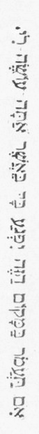

＊２愚かな心の縺 れを、誤りなく解 きほぐす
そんな纎細な手がどこにあろうか。
哀れにもやつれはてた人に、平氣で石を投げつける
そんな氣強い手がどこにあろうか。
＊３虚榮の血の押さえがたいたぎりを、誰が裁くであろうか。
忘られぬままに若い人の心に強い根を張らせ
ひそかに成心を植えつけて、その人の靈魂を蝕 みつくす
そんなかりそめの言葉を、誰が裁くであろうか。
汝 幸いなる者よ、明るい世界に生まれはぐくまれ
敬虔なる手に育てられた幸いなる者よ、
罪を計る秤 をすてよ――そは汝には許されないのだ。
人を打つ石をすてよ――そは汝みずからの頭 に當るであろう。――
［＃改ページ］そんな纎細な手がどこにあろうか。
哀れにもやつれはてた人に、平氣で石を投げつける
そんな氣強い手がどこにあろうか。
＊３虚榮の血の押さえがたいたぎりを、誰が裁くであろうか。
忘られぬままに若い人の心に強い根を張らせ
ひそかに成心を植えつけて、その人の靈魂を
そんなかりそめの言葉を、誰が裁くであろうか。
敬虔なる手に育てられた幸いなる者よ、
罪を計る
人を打つ石をすてよ――そは汝みずからの
一七三八年生まれのフリードリヒ・メルゲルはＢ村のいわゆる半小作農、いいかえればけちな土地持ちの一人息子であった。この村は、どの家もこの家も、みんなぞんざいな建てかたで
法令がえらく簡單で、しばしば不備であったために、正不正に關する住民たちの考え方は多少混亂していた。でなければ、むしろ、一定の法令のほかに第二の法令が、つまり世論や、習慣や、怠慢によって生まれた時效の法令ができているという有樣であった。地主たちは、些細な事件ならば、慣例によって裁くことが認められていたので、大抵の場合にはまず間違いのない自分たちの見解によって處罰したり褒美を與えたりした。農民は、自分の手にあうことや、多少ゆとりのある良心にてらして
近村の人たちよりもがさつで、負けん氣一方の村人たちは、この物語の舞臺である小國においては、同じ事情のもとにある他の國々においてよりも、何かと人目をひきがちであった。盜伐や密獵はひんぴんとして行われた。それから喧嘩口論は毎日のようにくりかえされたが、そのつどめいめいは、頭を打ち割られても、泣寢入りするよりほかに道がないという有樣であった。けれども、廣大な、そして收益の多い森林は、この國の重要な財源をなしていたので、すべての林區はきびしく監視されていたが、しかし、それもけっして法令どおり行われたわけではなく、むしろたえず新奇な工夫をこらして、相手の暴力や計略をやっつけるために、こっちも暴力や計略を練って事に當るという風であった。
Ｂ村は全御領地のうちでも、一番傲慢な、狡猾な、大膽な部落だといわれていた。深い幽邃な森林の靜寂の眞中に、その位置を占めていることが、おそらく早くから、村人たちの生まれながらの剛情な心を養ったのであろう。丁度その附近に河があって、末は海に注ぎ、おまけに造船用材をらくらくと國外に運搬できる大きな屋形船を浮かべえたことは、盜伐者の生まれながらの圖々しさをいっそう助長することにあずかって力があった。それから、周圍いたる所に山林官が集っていたという實情も、ここではただ挑撥的な效果だけしかおさめえなかった。というのは、ひんぴんとして起る小ぜりあいの場合に、勝ち目は大抵農民の側にあったからである。美しい月夜には三四十臺の馬車が、同時にその倍くらいの男たちをのっけて出かけて行った。その仲間には、まだ十分に成長していない少年から、七十歳の村長にいたるまで、あらゆる年齡の男たちがふくまれていたが、村長は、經驗をつんだ案内役として、村の法廷で自分の席につく時と同樣の誇らしい自覺をもって、それらの一隊を率いて行くのである。後にのこった家族たちは、安氣な氣持で、でこぼこ道に車輪が軋ったり、ぶつかったりしながら、次第に遠ざかって行くのを聞きながら、靜かに眠りつづけた。時おり聞える銃聲や、低い叫び聲が、新妻や許婚を起きあがらせることもあったが、ほかには誰ひとりそんなものに耳をかたむける者はなかった。やがて、あたりがほのぼのと明けかかると、一隊は顏を眞鍮のようにてらてら光らせて、前と同じように默々としてもどって來た。頭を繃帶した者もちょいちょい見うけられたが、そんなことはいっこう問題にもされなかった。そして、それから二三時間もすると、その界隈は、さんざんに打ちのめされ、嗅ぎ煙草をかがされてふらふらになり、暫くは職務につくこともできないような恰好で森から擔ぎ出された一人、ないし數人の山林官の災難話で持ちきりであった。
こういった環境の中で、フリードリヒ・メルゲルは生まれた。その生家というのは、堂々ととりつけられた煙突と、相當大きなガラス窓とによって、それを建てた人の勿體ぶりようがわかるのであるが、同時に、現在の荒廢ぶりによって、目下の所有者のみじめな暮らしむきも、うかがわれるのであった。むかし屋敷と庭のまわりにめぐらしてあった格子垣は、今はもう荒れほうだいの柵にかわっていた。屋根はくずれ、牧場にはよその家畜が草をくっており、屋敷に接した畑にはよその穀物がみのり、庭には昔景氣のよかった頃の薔薇の老木が二三本のこっているほかには、野菜よりもむしろ雜草がしげっているという有樣であった。こうなったについては、いろんな不幸な出來事が何かとその原因をなしていたが、しかしまただらしなさや家政の亂脈も、大いにあずかって力があった。フリードリヒの父親の、ヘルマン・メルゲル老人は、その獨身時代は、いわゆる世間なみの酒のみであった。つまり日曜日と祭日だけは、道端の溝にころがるほど醉っぱらったが、ふだんはずっと、ほかの人たちと同じように、行儀よく暮らしていた。そんなわけで、彼があるきりょうよしの裕福な娘に求婚したことも、彼にはけっして不似合なことではなかった。結婚式は陽氣に進められた。メルゲルはけっしてひどくは醉わなかった。そして、日が暮れると、花嫁の兩親は、滿足して引きあげていった。ところが、次の日曜日にはもうその若い新妻が立派な衣裳や新しい嫁入道具を全部うっちゃらかして、血まみれになって泣き叫びながら、村の中を自分の親里のほうへ驅けて行くのが見られた。このことは、いうまでもなくメルゲルにとっては、ひどく人聞きのわるい、いまいましいことであった。もちろん彼はなぐさめを必要とした。そういったわけで、その日の午後には彼の家の窓ガラスは、一枚として完全なのはのこってはいなかった。その上、夜更けまで、戸口のしきいの前に寢ころんで、割れた瓶の首を時々口へ持って行っては、顏や手をやたらに傷つけている彼の姿が見られた。新妻は、兩親の家に歸ったきり、まもなくわずらいついて、死んでしまった。さて、メルゲルの心を苦しめたのは、後悔であったか、それとも羞恥心であったかはともかくとして、彼はますます＊４うさばらしを必要とするように思われた。そうして、まもなく彼は手のつけようのないのんだくれ仲間の中へ數えられるようになった。
暮らしむきは、落ちぶれる一方であった。よその娘たちまでが、惡口をいったり、意地わるをしたりした。そんな風にして、數年の月日が經過した。メルゲルは、その間ずっとじじむさいやもめ暮らしをつづけていたが、しまいには、見る目も哀れな男やもめになり下ってしまった。ところが突然彼は、またもや花婿として姿を現わした。事件そのものが意外であったように、花嫁の人柄も、さらにいっそう、みんなを驚かせるに十分であった。マルガレート・ゼムレルはしっかりした、ちゃんとした女で、年はもう四十を越してはいたが、娘のころは、村の小町娘とうたわれ、今でもまだ利口な世帶持ちとしてみんなから尊敬されていたし、その上相當小金もためていたので、何が彼女をそうさせたかについては、世間の人にはまるで合點がいかなかった。われわれは丁度この彼女自身自覺している完全さの中に、その理由を發見しうるような氣がする。結婚式の前夜彼女はこういったという噂であった。「夫に虐待される女は、馬鹿か、そうでなけりゃ能なしよ。これがうまく行かなかったら、みんな、わたしがわるいんだと思っていておくれ。」結果はしかし遺憾ながら、彼女は自分の力を買いかぶっていたことを證明した。初めのうちは、彼女は、夫を押さえていた。夫は、のみすぎた時は、家へはもどらなかった。でなければ、納屋の中へもぐりこんだ。ところが、あまりに手綱をしめすぎたために、とうとう辛抱しきれない時がやって來た。やがて彼がよろめきながら、通りを横ぎって家の中へころがりこみ、まもなく家の中で彼の亂暴する物音が聞えたかと思うと、こんどはマルガレートがあわてて戸や窓をいそいでしめるのが見られた。そういったある日のこと――それはもう日曜日ではなかった――彼女は晩方頭巾も襟卷きもつけないで、髮をふりみだしたまま家をとびだし、庭の野菜畑の脇につっぷして、兩手で地面を掘りかえし、やがておずおずとあたりを見まわし、すばやく野菜を一束折りとって、それをかかえてまた家のほうへゆっくりともどって行ったが、今度は家へははいらないで納屋へはいって行くのであった。噂によると、メルゲルは、この日初めて彼女に手をかけたということである。もっともこれは彼女が告白したわけではなかったけれども。
この不幸な結婚生活の二年目に、男の子供が生まれた。それはしかしけっして喜ばれたわけではなかった。というのは、マルガレートは、子供を渡された時、ひどく泣いたということである。だが、當のフリードリヒは、悲しみに充たされた心臟の下に長い間はいっていたにもかかわらず、丈夫なかわいい子供であった。そして、新鮮な空氣の中で、すくすくと育っていった。父親は、子供を大變かわいがった。そして家に歸る時には、かならず子供のために一きれの卷パンか何かを持って歸ることを忘れなかった。それどころか、子供が生まれて以來、彼はすっかり心を入れかえたという評判であった。少くとも家の中の騷ぎは、ずっと少くなった。
フリードリヒは
「おっ母、父ちゃんは今夜は歸らないの。」
と、彼はたずねた。
「歸るものかね、あしただよ。」
「でも、どうして歸らないの。ね、おっ母、父ちゃんは歸るっていったじゃないか。」
「ふん、何いってんだよ。父ちゃんはいったとおりするものかね。さあさあ、早く着物をぬいで寢るんだよ。」
二人が横になったかと思うと、きゅうに一陣の突風がまき起って、今にも家をさらって行くかと思われた。ベッドがみしみしとふるえ、煙突の中では何かがちょうど家の
「おっ母、誰か戸をたたいてるよ。」
「しいっ、フリッツ、あれは破風のゆるんだ板が、風に吹かれてるんだよ。」
「そうじゃないったら、おっ母、戸口のとこだよ。」
「戸がしまらないのさ。掛金がこわれてるんだよ。ね、頼むから、早く寢ておくれ。せめて夜中だけでも、おっ母に休ませておくれよ。」
「でも、父ちゃんが歸って來たら、どうするの。」
母親は、ベッドの中ではげしく寢がえりをうった。
「父ちゃんは、惡魔にとっつかまっているんだよ。」
「惡魔はどこにいるの、ね、おっ母。」
「うるさい子だね。惡魔は戸口に立っていて、お前が靜かにしないと、さらっていくんだよ。」
フリードリヒは靜かになった。彼はなお暫く耳をすましていたが、やがて寢入ってしまった。二三時間たって、彼は目をさました。風向きはいつのまにかかわっていた。そしてこんどは、窓の隙間から風が吹きこんで、まるで蛇のように、彼の耳もとでしゅうしゅう鳴っていた。彼の肩はこごえたように冷たくなっていた。彼は、蒲團の中に深くもぐりこんで、恐ろしさのあまり、じっと靜かにしていた。暫くたって彼は、母親も眠っていないことに氣づいた。彼は母親の泣き聲と、それから時々「＊６めでたし、聖寵
「フリードリヒ、お前は目がさめてるのかい。」
「うん、おっ母。」
「いい子だから、お前も少しお祈りをしな――お前だって、もう、主祷文はあらかた覺えてるだろう――天主樣がわたしたちを水難火難から守って下さるようにね。」
フリードリヒは、惡魔ってものはいったいどんな恰好をしてるのかしら、と考えた。家の中のいろんな物音やざわめきが、不思議に思われて仕方がなかった。家の中にも、外にも、何かしら生きものがいるにちがいない、という氣がするのであった。
「そら、おっ母、たしかにそうだよ。みんな戸をたたいてるよ。」
「そうじゃないよ。うちには、がたがた鳴らない古板なんて、一枚もありゃしないんだから。」
「そら、聞えるじゃないか。誰か呼んでるよ。そら。」
母親は起きあがった。嵐の唸り聲が、ちょっとやんでいた。窓の鎧戸をたたきながら、二三の人たちが、「マルガレート。マルガレートのおかみさん、おおい、戸をあけろよ。」と呼んでいるのがはっきりと聞えた。マルガレートは、腹だたしげにさけんだ。
「やれやれ、また醉いどれを連れて來た。」
念珠が紡ぎ車にぶつかって、からからと鳴った。着物がやけにつかみとられた。彼女は爐のそばへ行ったが、まもなくフリードリヒは、彼女が勝氣な足どりで土間をとおって行く音を耳にした。マルガレートはいっこうもどっては來なかったが、臺所では、大勢のつぶやき聲や、よその人たちの話聲が聞えていた。二度ばかり、見なれない男の人が部屋へはいって來て、不安そうに何かを探しているように思われた。突然油燈が部屋の中へ持ちこまれた。二人の男が母親を連れて來た。彼女はまるでチョークのような眞青な顏をして、目をつぶっていた。フリードリヒは、母親が死んでいるような氣がした。彼は、思わず恐怖の叫び聲をあげたが、その時誰かにぴしゃりと平手打ちをくらわされたので、また默ってしまった。そのうちに彼は、次第に周圍の人たちの話から、父親が森の中で死んでいたのを伯父のフランツ・ゼムレルと、ヒュルスマイエルとに發見されて、その死骸がついさっき臺所まで運びこまれたことを會得した。
マルガレートは意識を取りもどすと、よその人たちに、あっちへ行ってくれるようにと頼んだ。兄が彼女のそばにのこっていた。フリードリヒは、いうことを聞かぬとひどい目にあわせるぞとおどかされて、寢床の中にもぐっていたが、ひと晩じゅう臺所でぱちぱち燃える焚火の音や、人々の
「マルガレートや。このことをあまり氣にするんじゃねえよ。わしたちはめいめいお
二日たって、死骸が運び出された時、マルガレートは、顏を前掛けでおおいながら、爐のそばに坐っていた。二三分たって、あたりが靜かになった時、彼女はこうひとりごとをいった。
「十年の年月。十の十字架。わたしたちは一緒にそれを擔いで來たっけ。でも、わたしはもう一人になってしまった。」
それから彼女は聲を高めていった。
「フリッツや、こっちへおいで。」
フリードリヒはおずおずと近よった。黒いリボンをつけ、とり亂した顏をした母親の姿が、ひどく氣味わるく思えるのであった。
「フリッツや、」と、彼女はいった。「お前はこれからもおとなしくして、おっ母を喜ばせてくれるだろうね。それとも、お前は、行儀のわるい子になって、嘘をついたり、酒をのんだり、人のものを
「おっ母、ヒュルスマイエルは
「ヒュルスマイエルが。とんでもない。お前はひどい目にあわされたいんだね。誰がお前にそんなことを教えたの。」
「あの人はこないだアーロンをぶんなぐって、六グロッシェン
「あの人がアーロンの金を
「でも、おっ母、ブランデスさんは、こうもいったよ、あの人は木や鹿を
「これ、ブランデスさんは山林官だよ。」
「おっ母、山林官は嘘をつくの。」
マルガレートは、ちょっとのあいだ沈默して、それから、いった。
「いいかい、フリッツ、木は天主樣が自由に大きくして下さるんだし、けものは勝手にどこの御領内へも行けるんだから、誰のものともきまっちゃいないんだよ。どうせお前にはまだよくはわかるまいが。さあ、物置へ行って、柴をとっておいで。」
フリードリヒは、藁の上に寢かされていた父親の死顏を見せてはもらったが、その時父親は、青ざめた恐ろしい形相をしていたということであった。しかし、フリードリヒは、その後人にそのことを話したことはなく、自分でもそれを思い出すのを好まないようであった。總じて、あらゆる他人に對して無情冷酷に見える人の愛情や配慮ほど、人の心をひきつけるものはないが、丁度それと同じように、彼の父親に對する思い出は、いわば一種の恐怖を交えた、しみじみとした氣持を彼の心にのこしているのであった。そして、フリードリヒの場合は、こうした感情は、他人の側からのいろんな輕蔑の感情に刺戟されて、日ごとに高まって行った。彼がまだ子供の頃、世間の人たちは死んだ父親のことをとかく惡くいったが、そんな時は、彼はいつも悲しい氣持がした。これは、近所の人たちの思いやりの心ではどうすることもできない、宿命的な悲しみであった。不慮の死をとげた人のことをかれこれ取沙汰して、その安息をさまたげることは、その地方でのわるい風習であった。メルゲル老人はブレーデの森の幽靈になってしまった。彼は鬼火になって、醉っぱらいを、も少しでチェレの池へ引っぱりこむところであった。家畜番の少年たちが、夜中に火のそばにしゃがんでいると、谷間のほうで梟が鳴く頃に、時々、その鳴き聲にまじってとぎれとぎれに、ひどくはっきりと、彼が「まあ、聞きなよ、かわいいリーゼや」と呼んでいるのを聞いた。また、あるもぐりの
彼は十二になった。その頃母親は、自分の弟の訪問をうけたが、この弟というのはブレーデに住んでいて、姉の馬鹿げた結婚以來、彼女の家の敷居を一度もまたいだことがないという人物であった。
ジーモン・ゼムレルは、背の低い、落着きのない、やせぎすの男で、額ぎわに魚のような目を持った、
「ジーモン、お前さんかね。」と、彼女はいったが、なぜか身體がふるえて、椅子につかまらずにはいられなかった。「わたしや、うちの汚ない伜がどんなに暮しているか、わざわざ見に來たのかね。」
ジーモンは眞顏で彼女を眺めて、それから彼女の方へ手をさし出した［＃「さし出した」は底本では「さし出しだ」］。
「お前も年をとったぞな、マルガレート。」
マルガレートは、溜息をついた。
「あれからずっと不仕合わせつづきでね、そりゃつらいこともあったよ。」
「そうよ、遲い嫁入りてやつは、誰だって後悔するものさ。お前が年をとっても、子供はまだ
マルガレートの悲しみにやつれた顏には、さっと血のような赤い焔がとんだ。
「ところで、噂によれば、お前の子供は、拔けめなしの、しゃれ者だっていうじゃねえか。」と、ジーモンは言葉をつづけた。
「まあ、相當にね、それに、おとなしい子だよ。」
「ふむ、いつか、牝牛を盜んだ奴があったっけ。そいつもおとなしい子だったってな。ところで、お前の子供は、無口で、ひっこみ思案だってね。ほかの子供らと、ちっとも遊ばねえっていうじゃねえか。」
「それがね、ずいぶん變ってるんだよ、」と、マルガレートは、ひとりごとのようにいった。「よくないことだがね。」
ジーモンは愉快そうに笑った。
「お前の子供は、ほかの奴らに二三度こっぴどくやられたもんだから、臆病になったんだよ。奴もいずれは復讐するだろうがね。ヒュルスマイエルが、こないだやって來て、そういってたよ、奴はまるで子鹿のようだって。」
自分の子供がほめられるのを聞いて、心をひらかない母親があるだろうか。哀れなマルガレートがこんなにもうれしい氣持になったのは、めったにないことであった。みんなは彼女の子供のことを陰險で、ねそだといっていたのである。涙が彼女の目にあふれた。
「そうさ、有難いことに、身體もたっしゃでね。」
「どんな顏をしてるんだい。」
と、ジーモンは言葉をつづけた。
「お前さんによく似てるよ、ジーモン、そっくりだよ。」
ジーモンは、笑った。
「そうか、そいつは珍らしい奴だ。おれはこのとおり、日一日と汚くなる一方だからな。學校で碌でもねえことを習わせるんじゃねえぞ。お前は奴に牛の番をさせるんだって、そりゃいいことだよ。學校の先生のいうことなんぞは、おおかた嘘っぱちばかしだからな。して、どこで番をしてるんだい。テルゲンの谷かね。ローデの森かね。トイトブルクの森かね。夜も朝もやってるのかい。」
「夜どおしずっとだよ。なんでまた、そんなことを聞くのかね。」
ジーモンはこの言葉を聞き落したらしかった。彼は戸口から頸をつき出した。
「おや、向うから奴がやって來るぞ。まったく父親似だな。あの腕のふりようはどうだい。死んだ兄貴にそっくりじゃねえか。おや、よく見な。奴はおれのブロンドの髮をうけついだぞ。」
母親の顏にひそかな誇らしげな微笑が浮かんだ。彼女のフリードリヒのブロンドの捲毛と、ジーモンの赤味がかった
「あれはいい子だよ、」と、彼女はいった。「ただわたしがさびしく暮らしているうえに、父親に仕込まれたことがないもんだからね。」
ジーモンは、拔けめなくうなずいてみせた。
「まあ、おれにまかせておきな。とにかく、これから仲よくしようじゃねえか。それで、今日すぐにあの子をよこしてくれるだろうな。というのは、水車場から袋を二つとって來なくちゃなんねえんだ。一番小せえのが、奴に丁度いいんだよ。まあ、そんな工合にぼつぼつおれの手傳いをさせるんだな。おい、フリッツ、お前の
まもなくマルガレートは、しだいに遠ざかって行く二人のうしろ姿を見送った。ジーモンは先きに立って、顏で風をきりながら進んで行ったが、赤い上衣の裾が丁度火焔のようにうしろになびいていた。それはちょうど盜んだ袋を背おわせられて
今や二人は、トイトブルクの森の近くにさしかかった。そこはブレーデの森が山脈の傾斜をくだって、眞暗な溪谷を埋めている所であった。この時まで二人はほとんど口をきかなかった。ジーモンは何か考えこんでいるらしく、少年はただぼんやりしているようであった。そして、二人とも重い袋をせおって、息をきらしていた。突然ジーモンがたずねた。
「お前はブランデーがすきかい。」
少年は答えなかった。
「おれは、お前がブランデーがすきかって聞いてるんだ。おっ母はたまには、ちっとぐれえくれるんだろう。」
「おっ母は持ってやしねえよ。」
と、フリードリヒはいった。
「あ、そうか。そりゃ、なお結構だ。――お前は、目の前の森を知ってるだろうな。」
「あれはブレーデの森だよ。」
「それから、あの中でどんなことがあったかも知ってるだろうな。」
フリードリヒは、口をつぐんだ。そのうちに彼らは、氣味のわるい谷間にますます近づいた。
「おっ母は相變らずお祈りをするのかい。」
と、ジーモンはまた話しかけた。
「うん、毎晩
「そうか。で、お前も一緒にお祈りをするのかい。」
少年は、なかばどぎまぎし、ずるそうに横目づかいをして笑った。
「おっ母は日が暮れると飯の前に一串あげるんだけど、その時はおれは大抵まだ牛をつれてもどっちゃいねえし、も一串は寢床の中であげるんだけど、その時はおれは大抵寢てるんだ。」
「うむ、そうか。」
これらの最後の言葉は、谷間の入口をおおうている、大きなブナの木のしげった蔭で話された。もう
「フリードリヒ、お前はこの木を知ってるか。これが平たく枝をひろげた槲の木だぞ。」
フリードリヒはちぢみあがって、冷たい兩手で叔父にしがみついた。
「いいかい、」と、叔父は言葉をつづけた。「ここでフランツ伯父きとヒュルスマイエルが、お前の親父が醉っぱらって［＃「醉っぱらって」は底本では「醉っらぱって」］、＊８告白もせず、終油もうけないで死んでいるところを見つけたんだ。」
「叔父さん、叔父さん。」と、フリードリヒは息をきらしながらいった。
「どうしたってんだ。まさかこわいんじゃあるめえな。仕樣のねえ奴だ、やけに腕をしめつけやがって。放せ。放せったら。」
彼は少年をふり放そうとした。
「お前の親父は、まあまあいい奴だったな。神樣もそうむごいことはなさるめえよ。おれだって親身の兄弟のように愛していたからな。」
フリードリヒは叔父の腕を放した。二人は默りこくって、森ののこりの部分をとおりすぎた。粘土壁の小屋や、まれに煉瓦づくりの比較的ましな家を持ったブレーデの村が見えて來た。ジーモンの家もそれらのましな家のうちの一つであった。
あくる日の晩、マルガレートはもう一時間も前から絲卷竿を持ったまま、戸口に腰をおろして、息子の歸るのを待っていた。前夜は、彼女が子供の寢息を自分の脇に聞かずにすごした最初の夜であった。それだのにフリードリヒは、いまだにもどっては來なかった。彼女は腹立たしく、そのくせ心配であったが、そんな氣持になることが馬鹿げていることもよくわかっていた。塔の時計が七時を打った。家畜ももどって來た。だのに、彼は依然としてもどっては來なかった。彼女は牝牛たちを見まわるために立ちあがらねばならなかった。
彼女が暗い臺所へもどって來ると、フリードリヒは爐のそばに立っていた。彼は、爐のほうにかがみこんで、炭火で兩手をあぶっていた。焔の光が顏にちらついて、表情に、やせこけた、おどおどふるえているような、いやな見かけを與えた。マルガレートは土間の戸口に立ちどまった。子供の樣子がへんに變ったように思えたからである。
「フリードリヒ、叔父さんはどうしてるかね。」
少年は何かわけのわからない言葉をつぶやいて、防火壁のそばへ身體をすりよせた。
「フリードリヒ、お前は話すのを忘れたのかい。ね、口をきくもんだよ。わたしが右の耳がよく聞えないのを、知ってるじゃないか。」
子供は聲をあげて、ひどく吃ったので、マルガレートはてんで聞きとれなかった。――
「お前は何をいってるんだよ。ゼムレル親方からの挨拶かい。また行くんだって。どこへさ。牛はもうもどってるよ。いやな子だね、何いってんだか、ちっともわからないじゃないか。待ちな。お前が舌を持ってないか、見てやるから。」
彼女は、意氣ごんで二三歩前のほうへ進んだ。子供は、哀れな、訓練中の小犬のような、悲しげな目つきをして、彼女を見あげた。そして、不安そうに、足をふみつけたり、背中を防火壁にこすりつけたりしはじめた。
マルガレートは、じっと立っていた。彼女の目つきは、おどおどふるえた。彼女には子供がちぢこまったように思われた。彼の着物までが同一のものではなかった。そうだ、それは、彼女の子供ではなかったのである。それにもかかわらず――彼女は「フリードリヒ、フリードリヒ。」と大聲で呼びつづけた。
寢室で、箪笥の戸ががたんと鳴って、呼ばれた少年が、姿を現わした。片手には俗に
「そら、ヨハネス。」といって、彼はおおように、その樂器を與えた。「そら、約束のヴァイオリンだよ。おれはもう遊んじゃいられねえんだ。これからは金もうけをしなくちゃなんねえからな。」
ヨハネスは、も一度、おずおずした目つきをマルガレートのほうへ向けた。それからゆっくりと片手をのばし、差出されたものをしっかりと掴んで、人目をはばかるように、ぼろぼろの上衣の裾の下にかくした。
マルガレートはじっとたたずんで、子供たちのするがままにさせておいた。彼女の考えはずっと別の眞劍な方向をとっていたのである。彼女は落着かない目つきで、子供たちをかわるがわる眺めた。見なれない子供は、またしても炭火の上に身をかがめた。ほんのいっときながらも、さも滿足そうな表情は、まるで低能兒のように見えるのであった。一方フリードリヒの顏には、明らかに好意的というよりもむしろ自己本位の同情心が動いていた。そしてガラスのように冴えた彼の目つきは、この時初めてはっきりと、押さえがたい名譽心と、空威張の性癖を現わしていたが、これはその後彼の大抵の行爲の強い動機となったものであった。
母親に呼びかけられて、彼は、新奇でもあり、うれしくもあった瞑想から、呼び覺まされた。
彼女はまた紡ぎ車のそばに坐っていた。
「フリードリヒ、」と、彼女はためらいながらいった。「まあいってみな――」そして、また口をつぐんだ。フリードリヒは顏をあげはしたが、それ以上なんにも聞えなかったので、また自分の子分のほうへ顏を向けた。「これ、お聞きったら――」それからいっそう聲を低めていった。「あれは、どういう子だね。名前はなんていうの。」
フリードリヒも同樣に低い聲で答えた。
「ヒュルスマイエルのとこへ使いに來た、叔父さんとこの豚番さ。叔父さんはおれに靴と、麻のチョッキとをくれたんだ。それを
「それから。」と、マルガレートはいった。
「なんだい。」
「それから、なんていうんだよ。」
「ううん――それっきりさ――待てよ――やっぱりそうだ。＊９ニーマントっていうんだ。ヨハネス・ニーマントっていうんだ。――父さんがいないんだよ。」
と、彼はいっそう聲を低めてつけ加えた。
マルガレートは立ちあがって、部屋の中へはいったが、暫くして、きびしい暗い顏をして出て來た。
「じゃ、フリードリヒ、」と、彼女はいった。「あの子に歸っておもらい、叔父さんの用をたすように。――ね、お前、どうしてそんな灰だらけの所にしゃがんでるの。
少年は、追いつめられた者のような顏をして、いきなり立ちあがったので、手足が邪魔になり、木沓のヴァイオリンが、も少しで火の中へ落ちるところであった。
「待て、ヨハネス、」と、フリードリヒは尊大ぶっていった。「お前におれのバタパンを半分やろう。おれには大きすぎるからな。おっ母はいつも丸のまま切ってくれるんだ。」
「およしったら、この子は
と、マルガレートはいった。
「そうさ、でも、歸ったって、もう何ももらえやしねえや。ジーモン叔父さんは、七時に飯を食うんだもの。」
マルガレートは、少年のほうへ顏を向けた。
「じゃ、お前にはなんにもとっといてくれないのかい。いったい、誰がお前の世話をしてくれるんだい。」
「誰もしてくれねえや。」
と、子供は吃りながらいった。
「誰もかい。」と、彼女はくりかえした。「じゃ、おとりよ、おとりよ。」と、彼女は性急につけ加えた。「誰も世話をしてくれないので、ニーマントっていうんだね。かわいそうに。じゃ、早くお歸りよ。フリードリヒ、お前は行ってはいけないよ、いいかい、あの子と一緒に村をとおるんじゃないよ。」
「おれは納屋から
と、フリードリヒは答えた。
二人が行ってしまうと、マルガレートは椅子に腰を下ろして、深い悲しみの色を浮かべながら、兩手を打ち合わせた。彼女の顏は眞蒼であった。
「僞誓だ、僞誓だ。」と、彼女はうめくようにいった。「いったい、これはなんてことだろう。ジーモン、ジーモン、お前はどうやって神樣にいいわけをするかね。」
彼女は、暫くのあいだ、じっと口を結んだまま、すっかり放心したように坐っていた。フリードリヒはその前に立って、もう二度も彼女に話しかけていたのであった。
「何だって。何の用だい。」
と、彼女は激昂して叫んだ。
「おっ母に金を持って來たんだ。」
と、彼は、びっくりしたというよりも、むしろあきれた顏をしていった。
「お金だって。どこにさ。」
彼女が身體を動かすと、小さな貨幣がちゃりんと鳴って、土間に落ちた。フリードリヒは、それを拾いあげた。
「仕事を手傳って、ジーモン叔父さんにもらったんだ。おれはもう、自分で金もうけができるんだ。」
「ジーモン叔父さんからもらったって。そんなもの、捨てておしまい。――それより、貧乏な人にくれてやるさ。いけない、やっぱり、持っておいで。」と、彼女はほとんど聞えないくらいの聲でささやいた。「わたしたちも貧乏人さ。いつまた乞食にならないともかぎらないから。」
「月曜日にまた叔父さんとこへ行って、種まきを手傳うんだ。」
「また行くんだって。およしったら。どんなことがあっても、やりやしないから。」
彼女ははげしく子供を抱きしめた。
「やっぱりいけない、」と、彼女はつけ加えた。突然あふれ出る涙が、彼女のやせこけた頬を流れ落ちた。「行っておやり。叔父さんは、おっ母のたった一人の兄弟なんだから。それに、あとがこわいからね。でも、神樣のことを忘れないで、毎日お祈りをするんだよ。」
マルガレートは、顏を壁に當てて、聲をあげて泣いた。彼女はこれまでずいぶんつらい目にあってきた。夫の虐待にも、もっとつらいことには、その死にもたえて來たし、また一人になって、最後の畑地を債權者に引渡し、やむなく耕作の手を止めた時は、身をきられるよりもつらかった。けれども、今度のようなつらい目にあったことは、これまでについぞ一度もなかったのである。とはいうものの、一晩を泣きあかし、一夜をまんじりともせずにすごしてからは、弟のジーモンだって、そう
その時以來フリードリヒは、めったに家へはもどらなかった。ジーモンは、甥に對して精いっぱいの愛情をそそいだようであった。少くとも甥の姿が見えないと、非常にさびしがった。そして、家の用事か何かで甥が暫く母親のもとにとどまっていると、ひっきりなしに使いをよこすのであった。少年は、それ以來、人が變ったように思われた。ぼんやりしたところはなくなり、何かにつけてしっかりして來た。身なりにも氣をつけるようになり、まもなくしやれた［＃「しやれた」はママ］、すばしっこい若者だと評判されるようになった。とかく何かと山子仕事を考えずにいられないたちの叔父は、ときどき何か大袈裟な、たとえば道路工事などのような、公けの事業を引きうけたが、そんな時にも、フリードリヒは常に彼のまたとない勞働者となり、またいたるところで、彼の右腕のように思われた。というのは、その體力こそまだ十分な發達をとげてはいなかったが、その根氣強さにおいては、なんぴとも彼におよぶ者はなかったからである。マルガレートは、これまではただ息子を愛するだけであったが、今や息子を自慢するようになり、そればかりか、息子に對して、一種の尊敬をはらうようになった。というのは、この若者が何ら彼女の助力をうけずに、それどころか彼女の助言ひとつ聞かずに、すくすくと成人するのを見たからである。そして彼女としては、世間の大抵の人たちと同じように、親の助言なるものをずいぶん高く評價していたので、そういった貴重な促進劑なしにぐんぐん伸びていく力を誰よりも高く買っていたのであった。
十八歳の時、フリードリヒはすでにある競技に勝利をえて、村の若者たちの間にすばらしい評判を確保した。その競技のために彼は、屠殺した豚を背負ってぶっとおしに二マイル以上も運んで行ったのである。けれども、こうした評判を共に樂しんだということだけが、つまりはマルガレートがこれらの惠まれた状態から引き出しえた唯一の利益であった。というのは、フリードリヒはその後、ますます身なりに金をかけるようになり、金がたりなくて村の誰かにひけをとるような場合には、次第にそれを苦痛とするようになったからである。その上、彼はすべての力を外部の仕事に向けるようになった。家では、從來の評判とは逆に、あらゆる根氣仕事がいとわしく思われた。そして彼はつらくても手間のかからない仕事を好むようになり、そのためにまもなく前にやっていた家畜番の仕事を引きうけるようになった。この仕事はもう彼の年齡には不向きになりかけていたので、時おり意外な嘲笑を招いたが、そのつど彼は、こっぴどく鐵拳をふるって相手を沈默させるのであった。そんなわけで人々は、彼がしゃれた恰好をして愉快そうに、村で評判のあんちゃんとして、若者たちの先頭に立って歩いたり、時にはぼろぼろの着物を着た家畜番として、しょんぼりと夢みるように牛のあとからついて行き、森の空地に寢ころんでは、一見放心したような顏をして立木の苔をむしったりしているのを見かけるようになった。
その頃、ちょっと眠っているように見えた法令が、一團の盜伐者に刺戟されて、いわば目をさますことになった。彼らは青シャツ隊と呼ばれ、その狡猾さと大膽さにおいて、遙かに先輩を凌駕していたので、さすがに氣の長い連中もとうとう怒り出してしまったのである。ところで、これまでは相當手ごわい連中でも、大體それと目ぼしがついたものであるが、今度はそれとは反對に、あらゆる警戒にもかかわらず、いまだに一人の容疑者さえも指名することができなかった。青シャツ隊という名前は、全然同じ形をした服裝に由來していた。そしてそのために、一部分逃げおくれて茂みの中へ姿を消すのを山林官に見つけられても、容易に見わけられるようなことはなかった。彼らは、＊10移動する毛蟲のように、すべてを荒らしまわった。森の全區域は一夜のうちに伐り倒され、すぐに運びさられて、翌朝は、木片や小枝の先きの亂雜な堆積以外に何ひとつのこってはいなかった。それから車のわだちの跡が村までつづいていないで、常に河からやって來て、また河へ引っかえしているという實情は、彼らが船持ちの保護をうけ、おそらくはその協力のもとに仕事をやっていることを證明していた。一味のなかには、非常に有能なスパイがいるにちがいなかった。というのは、山林官が數週間にわたって無駄な警戒をつづけたあげく、つい過勞のために職務をおこたると、それが嵐の夜であろうと月明の夜であろうとおかまいなしに、かならず盜伐が行われたからである。不思議なことには、附近の村民たちも、山林官もいっこう實情を知らないで、そのくせやたらに張りきっているという有樣であった。
二三の村については、たしかに青シャツ隊に加わっていないことが斷言された。しかし、すべての村のうちで一番怪しいと睨まれていたＢ村の嫌疑が晴れて以來は、もうどの村も嫌疑をかけられるようなことはなかった。Ｂ村の嫌疑が晴れたのは、ある偶然の出來事のためであった。というのは、村民のほとんど全部が公っぴらにある結婚式に招かれていったその當夜に、れいの青シャツ隊が最も大袈裟な盜伐の一つを遂行したからである。
森林の被害が、そのうちにますます増大したので、對策が、從來その例を見ないほど強化された。晝夜の別なく、見張りが配置された。作男や下男までが銃を持たせられて、山林官に參加させられた。けれども、效果はいっこうあがらないで、見張りたちが森の一隅を去ると、もう他の一隅には青シャツ隊が押しよせた。こんな状態がまる一年以上もつづいた。見張りと青シャツ隊、青シャツ隊と見張りという風に交互に出沒する有樣は、丁度太陽と月とが常に場所をかえて、ぶっつからないのと同じことであった。
それは一七五六年七月の、ある夜明けの三時であった。月は明るく空にかかっていたが、その光りはしだいに薄れかかっていた。東の空にはもう一條の細い黄いろい線が現われ、それが地平線を
森からときどき、にぶい、めりめりという音が聞えて來た。その音はほんの數秒間つづき、そのつど絶壁に反響して、長く餘韻をひいたが、それがいつも、五分ないし八分ごとにくりかえされた。フリードリヒは、それにはあまり氣をとめないで、ただときどきそれが特別に高くひびいたり、連續して聞えたりする時だけ頭をあげては、谷間に通じるいくつかの小徑のほうへ、ゆっくりと視線を向けるのであった。
あたりはすでに、ぐんぐん明るくなってきた。小鳥たちが低い聲でさえずりはじめ、露が地面からたちのぼるのが感じられた。フリードリヒは切株から頭を落したまま、兩腕を頭の上に組みあわせて、靜かに忍びよる曙光をじっと見つめていた。突然彼はとび起きた。頭の上をしゅっと稻妻のようなものがとおりすぎた。風に運ばれる野獸のにおいを嗅ぎつけた獵犬のように、彼は數秒間上體を前にかがめて、じっと耳をすました。それから、いきなり二本の指を口にくわえて、するどく口笛を吹きつづけた。
「＊11フィデール、こん畜生め。」
投げた石が、ぼんやりしている犬の脇腹に當ったかと思うと、犬はとび起きて、まずまわりに咬みつき、次にわんわん吠えながら石を投げた主人のほうへ三本足でとんで行って、慰藉を求めた。
その瞬間、近くの藪の小枝が音もなく押しわけられて、緑色の獵服をつけ、銀の紋章のついた楯を腕にかけ、撃鐵を起した銃を持った一人の男が姿を現わした。彼はすばやく谷間のほうへ視線を走らせ、それから特別するどい目つきでじっと少年を見つめたが、やがて前進して、藪のほうへめくばせを送った。徐々に七八人の男が現われた。みんなよく似た服裝をつけ、獵刀を腰にさし、撃鐵を起した銃を持っていた。
「フリードリヒ、さっきのは何だ。」
と、最初に現われた男がいった。
「このぼろ犬め、この場でくたばっちゃえ。畜生め、も少しで牛に耳をくわれるところだった。」
「こいつめ、見つけやがったな。」
と、他の一人がいった。
「夜が明けたら、首に石をつけて、おっぽり出してやるから、そう思え。」
と、フリードリヒは言葉をつづけて、犬をこづいた。
「フリードリヒ、馬鹿な眞似はよせ。貴樣はおれを知ってるだろうな。おれのいうことがわかったか。」
そういいながら、じろりとこっちを見た目つきは恐ろしかった。
「ブランデスさん、おっ母のことを忘れないでおくれよ。」
「よろしい。貴樣は森の中で何か聞かなかったか。」
「森の中で。」と、少年はすばやく山林官の顏を眺めた。「あんたの
「おれの
もともと暗い山林官の顏色が、みるみる濃い青赤色にかわった。
「いったい、幾人ぐらいだ。それから、どこで仕事をやってるんだ。」
「あんたが、みんなをどこへやったか、おら知らねえや。」
ブランデスは、仲間のほうを向いた。
「先きへ行ってくれ。すぐに、行くからね。」
部下の姿がつぎつぎに藪の中へかくれてしまうと、ブランデスは、少年のすぐ前へやって來た。
「フリードリヒ、」と、彼は、激怒を押さえたような調子でいった。「おれはもう我慢がならない。貴樣を犬みたいにぶちのめしてやりたいんだ。貴樣らは、そうされたって、文句はいえまい。屋根瓦一枚だって、貴樣らのものじゃないんだからな。有難いことに、貴樣らはおっつけ乞食をするだろうが、鬼婆みたいな貴樣の母親がおれの家の前にきたって、かびだらけのパンきれ一つもらえやしないぞ。だがその前に、貴樣ら二人を牢屋へぶちこんでやるから、そう思え。」
フリードリヒは、發作的に木の枝をつかんだ。顏は眞蒼になり、目は水晶玉のように、今にも頭からとびだしそうな氣配であった。しかし、それはほんの一瞬間であった。やがて虚脱状態に近い極度の落着きがもどってきた。
「旦那、」と、彼はきっぱりと、ひどく柔らかな調子でいった。「あんたは、自分でも責任を負えないようなことをいったね。おれもそうだろう。だがもうみんな水に流そうじゃねえか。そこで、あんたの聞きたがってることをいうと、あんたが
彼はちょっと口ごもった。
「おれはあんたの管區で、一本だって、木を切ったことがあるかね。つまりだね、頼まれた以外に、どこかで。あんたがそういえるかどうか、ようく考えておくれよ。」
當惑そうに何かつぶやいたのが、山林官の答えの全部であった。彼は、大抵の無智な人たちのように、すぐに後悔するのであった。彼は不機嫌に向きをかえて、藪のほうへ歩いて行った。
「そっちじゃねえよ、旦那、」と、フリードリヒは叫んだ。「さっきの旦那がたのほうへ行くんだったら、みんなはそこのブナの木のところを、のぼって行ったよ。」
「ブナの木のところだって。」と、ブランデスは、疑わしげにいった。「そうじゃない。向うの、マステル谷のほうへ行ったんだ。」
「たしかに、ブナの木のところだったよ。のっぽのハインリヒさんの銃の革紐が、さっきまでそこの曲った枝にかかっていたんだ。ちゃあんとこの目で見たんだからな。」
山林官は、教えられた道を進んで行った。
フリードリヒは、終始その場所を離れなかった。彼は片腕を枯枝にまきつけて、半ば寢ころんだまま、山林官が職業がら注意ぶかい大跨で、丁度山猫が鷄舍の梯子をのぼるように足音を忍ばせながら、半ば草におおわれた小徑を、すべるように遠ざかって行くのをじっと見送っていた。彼がとおりすぎると、こちらで一本、あちらで一本という風に小枝が落ちた。彼の姿の輪郭が、徐々に消えて行った。その時もう一度葉叢をとおしてちかっと光ったものがあった。それは彼の獵服の鋼鐵のボタンであった。とうとう見えなくなってしまった。こうして山林官の姿が次第に遠ざかるにつれて、フリードリヒの顏の冷靜な表情が徐々に失われた。そしてしまいには、彼の顏は不安におびえているように思われた。さっきいったことを他人にもらさぬように頼まなかったことを後悔しているのであろうか。彼は二三歩踏みだしたが、やがてまた立ちどまった。「もう遲い、」と彼はひとりごとのようにつぶやいて、帽子をつかんだ。二十歩と離れていないところで、かすかにカチカチという音が聞えた。それは山林官が火打石を打っているのであった。フリードリヒは耳をすました。――「いけねえ。」やがて彼は、決心した調子でそういって、自分の持ちものをかき集めるやいなや、急いで谷にそって家畜を追って行った。
晝ごろ、マルガレートのおかみさんは、爐のそばに坐って、茶をわかしていた。――フリードリヒは、病氣になって、もどって來たのであった。彼ははげしい頭痛を訴えた。そして、母親からいろいろ聞かれるままに、山林官に對してひどく腹を立てたことを物語った。簡單にいえば、自分の胸一つにしまっておいたほうがよいと思われた二三の小さなことは別として、前に述べた一部しじゅうを全部話して聞かせたのであった。マルガレートは、默って、陰氣な顏をして、煮えたっている湯の中を眺めていた。彼女は、自分の息子の時々訴えるのを聞きなれてはいたが、今日はこれまでついぞなかったほど弱っているように思われるのであった。何か病氣になりかけているのであろうか。彼女は深い溜息をついて、つい手にしたばかしの薪を落してしまった。
「おっ母。」
と、フリードリヒが部屋からさけんだ。
「何か用かい。」
「今のは鐵砲の音かい。」
「そうじゃないよ。なぜそんなことを聞くのさ。」
「じゃ、頭の中でそんな音がしたんだな。」
と、彼は答えた。
隣りのおかみさんがはいって來て、何かひそひそ聲でつまらないおしゃべりをはじめたが、マルガレートはいっこう興味なさそうに聞いていた。やがて、隣りのおかみさんは出て行った。
「おっ母。」
と、フリードリヒは叫んだ。マルガレートは、彼の所へはいって行った。
「ヒュルスマイエルのおかみさんは、何をいってたんだい。」
「なんでもありゃしないよ。口から出まかせの嘘っぱちばかしさ。」
フリードリヒは起きあがった。
「ジーメルとこのグレートヘンの話だよ。お前もあの古い話なら、よく知ってるじゃないか。みんな嘘っぱちばかしだよ。」
フリードリヒは、ふたたび横になった。
「寢れるかどうか、やってみよう。」
と、彼はいった。
マルガレートは、爐のそばに坐って絲をつむいでいたが、いやなことばかりが思い出された。村では、十一時半の鐘が鳴った。戸の把手ががちゃんと鳴って、裁判所の書記のカップがはいって來た。
「
マルガレートが所望されたものを持って行くと、彼はたずねた。
「フリードリヒはどこへ行ったんだ。」
彼女は丁度皿を出しかけていたので、その言葉を聞きもらした。彼は、ためらいながら、ちびりちびりと飮んでいた。
「お前、聞いたかね。」やがて彼はいった。「青シャツ隊が昨夜また、マステルの森で、一區域すっかりきれいにさらって行ったよ、丁度おれの手の平みたいにさ。」
「あれまあ、えらいことをやるもんだね。」
と、彼女はいっこう興味なさそうに答えた。
「ひでえ奴らだ、」と、書記は言葉をつづけた。「まるでごっそりやっちまうんだからな。せめて若い木だけでも遠慮してくれるといいんだが。この腕ぐらいの、水棹一つ取れないような槲の木まで伐っちまうんだから、あきれたもんさ。あいつらには他人の難儀するのが、まるでもうけ仕事みたいにうれしいんだね。」
「困ったことだね。」
と、マルガレートはいった。書記はもう飮みおわっていたが、いっこう腰をあげる氣配もなかった。何か心に一物ありそうな樣子であった。
「ブランデスさんのことを何か聞かなかったかね。」
と、いきなり彼はたずねた。
「なんにも聞かないよ。第一あの人は、うちなんかへ來やしないよ。」
「じゃ、あの人がどんな目にあったか、知らないのかね。」
「なんだって。」
と、マルガレートは、緊張してたずねた。
「死んだんだよ。」
「死んだって。」と、彼女は叫んだ。「どうしてまた死んだんだね。おったまげたこった。今朝がた、えらく元氣で、銃を肩にかけてさ、うちの前をとおって行きなすったっけ。」
「死んだんだよ、」と、書記は、彼女の顏を鋭く見つめながら、くりかえした。「青シャツ隊に打ち殺されたんだ。つい十五分ばかし前に、死骸が村へ擔ぎこまれたとこさ。」
マルガレートは、兩手を打ちあわせた。
「天主さま、願わくは、その男をお裁きになりませぬように。その男は、みずからのなせし
「その男だって。」と、書記は叫んだ。「なあんだ、人殺しをやった奴のことか。」
部屋から、苦しそうな呻き聲が聞えて來た。マルガレートはそのほうへ驅けて行った。書記もうしろからついて行った。フリードリヒは、ベッドに起きあがって、顏を兩手の中に埋めたまま、瀕死の人のように呻いていた。
「フリードリヒ、どうしたのさ。」
と、母親がいった。
「どうしたというんだ。」
と、書記がくりかえした。
「おお、
と、フリードリヒはもがいた。
「どこがわるいんだね。」
「それがわからないんだよ、」と、彼女は答えた。「この子は朝の四時に、牛をつれてもどって來たんだよ、工合がわるいってね。」
「フリードリヒ、フリードリヒ、返事をしな、醫者を呼んで來てやろうか。」
「いいよ、いいよ、」と、彼は呻きながら答えた。「なあに、疝痛だよ、じきなおるさ。」
彼はうしろに倒れた。彼の顏は、苦痛のためにぴくぴくけいれんしていた。やがてまた顏色がもどって來た。
「出て行ってくれ、」と、彼は弱々しい聲でいった。「おれは眠りたいんだ。眠れば、なおるからな。」――
「メルゲルのおかみさん、」と、書記は眞顏でいった。「フリードリヒが四時に歸って、それから、どこへも行かないってのは確かかね。」
彼女は彼の顏をじっと見つめた。
「その邊にいる子供に聞いてみな。あれから出て行くなんて――出て行けるくらいなら、結構なんだがね。」
「奴は、お前に、ブランデスさんのことを話さなかったかね。」
「それは確かに聞いたよ、森の中で倅のことをひどく罵って、こちとらの貧乏ぐらしをさんざんにこきおろしたってことを。畜生め。――でも、天主さま、どうぞお許し下さい、あの人ももうおそばへ召されたのですから。さあ、行っとくれよ。」と、彼女ははげしい調子でいいつづけた。「お前さんは、正直な人にはじをかかしに、やって來たんだね。さあ、行っとくれったら。」
彼女はふたたび息子のほうへ身體をむけた。書記は出て行った。
「フリードリヒ、工合はどうだい。」と、母親はいった。「お前も聞いたろうね。恐ろしいことだよ、恐ろしいことだよ、告白もせず、罪の
「おっ母、おっ母、後生だから、眠らせておくれよ。もうどうにも我慢がならねえんだ。」
その瞬間、ヨハネス・ニーマントが部屋へはいって來た。ホップの蔓をまきつかせる棒みたいに、ひょろ長く伸びてはいたが、ぼろを着て、おどおどしているところは、五年前とそっくりであった。その顏はいつもよりもずっと青かった。
「フリードリヒ、」と、彼は吃りながらいった。「叔父さんとこへ、すぐに來いってさ。何か用があるんだって。すぐにだよ。」
フリードリヒは、壁のほうへ寢がえりをうった。
「おら行かねえよ、」と、彼はつっけんどんに答えた。「おら病氣なんだ。」
「でも、ぜひとも來いってさ、」と、ヨハネスは喘ぐようにいった。「ぜひ連れて來いって、いってたよ。」
フリードリヒは、あざけるように笑いだした。
「じゃ、連れて行くさ。」
「靜かに寢かせておくんだよ、あの子は行けやしないんだから、」と、マルガレートは溜息をついた。「どんな容態だか、見ればわかるじゃないか。」
彼女がちょっと外へ出て、やがてもどって來ると、もうフリードリヒは、着物をつけていた。
「どうしたっていうのさ、」と、彼女は大聲でいった。「お前は行けやしないよ、行っちゃいけない。」
「でも、どうにもならねえことは、仕樣がねえじゃねえか。」と、彼は答えて、もうヨハネスと一緒に、戸口から出ていった。
「ああ、天主さま、」と、母親は溜息をついた。「子供ってものは、小さい時は、わたしたちの膝をふみつけ、大きくなれば、わたしたちの心をふみつけるんだ。」
裁判所の取調べは、もうはじまっていた。犯行は明白であった。けれども犯人に關しては、證據が薄弱なために、四圍の事情からは青シャツ隊に有力な嫌疑がかけられていたにもかかわらず、やっぱり推測以上のことを敢てすることはできなかった。一つの犯跡が光明を與えるかと思われたが、それもやっぱり、いろんな理由から、當てにはならなかった。領主が不在であったために、裁判所の書記が自分の手で事件を處理しなければならなかった。彼はテーブルの前に坐っていた。部屋は、農夫たちで一ぱいであった。半ばは物ずきな人たちであり、半ばは、本當の證人が見つからないために、何らかの手がかりが得られるかも知れないと思われていた人たちであった。當夜家畜を見はっていた連中だとか、附近の畑を耕していた下男たちは、みんなポケットに兩手をつっこんで、堅くなって突っ立っていた。見たところ、ただ、かかりあいになるまいと、そればかり考えているかのようであった。
八人の山林官が訊問された。彼らの供述は全部一致していた。ブランデスは、十日の晩方、彼らに巡視を命じた。青シャツ隊の計畫について、彼のところへ情報がはいっていたにちがいなかった。けれども彼は、それについては、ごくぼんやりと匂わしただけであった。夜中の二時に、彼らは出かけたが、途中幾箇所かの盜伐の跡にぶつかったので、山林官長はひどく不機嫌であった。しかしそれ以外に、何らの異状も認められなかった。四時頃ブランデスは、「こいつは一杯くったな。では、歸ることにしよう。」といった。さて、彼らがブレーメル山をまわり、それと同時に風向きが變った時、マステルの森で木をきる音が手にとるごとく聞えて來た。斧の音が手ぎわよくつづけさまに聞えたので、さては青シャツ隊が仕事をやっているんだな、という結論になった。こんな小勢で、あの手ごわい盜伐團に刃向うことが、はたして當をえたことかどうかについて、暫く協議を重ねたが、格別はっきりと方針もきまらないうちに、その音のするほうへ徐々に近づいて行った。さて、そこでフリードリヒとの出會いの場面になるわけだが、それからブランデスが、何らの指示をも與えずに先きへ行くようにいったので、彼らは暫く前進すると、やがて、まだかなり遠く隔っている森の中の伐木の音が、いつのまにかすっかり止んでしまったことに氣づいた。そこで、彼らは立ちどまって、山林官長を待ちうけることになった。
ぐずぐずしているのが堪らなくなったので、彼らは十分ばかりたってから、また先きのほうへ進んで、やっと盜伐の現場に辿りついたが、その時はすでに仕事はおわっていた。森の中ではもう物音ひとつ聞えなかった。伐り倒された二十本のうち、八本だけがのこされていたが、あとはもうすっかり運びさられていた。車のわだちの跡が、すこしも見當らなかったので、この仕事がどんな風に行われたかということが、彼らにはまるでわからなかった。
その上丁度乾燥した季節ではあり、あたり一面松葉が散り敷いていたために、現場の地面がひどくふみしだかれていたにもかかわらず、犯人の足跡を見わけることは不可能であった。山林官長を待っていても無駄だと考えられたので、彼らは急いで森の他の側さして進んで行った。多分かすかながらも盜伐者の姿を見つけることができるであろうと思ったからであった。その時、森の出口の所で、一人の水筒の紐が、黒莓の蔓にからみついたので、思わずふりかえると、そこの藪の中で何かが光っているのが目にうつった。それは山林官長の革帶の締金であった。そして、右手に銃身を握りしめ、左手をまるめ、額を斧で打ち割られたまま、ながながと蔓草の中に倒れている山林官長の死骸が發見された。
以上が山林官たちの供述であった。つづいて農夫たちが順次呼び出されたが、彼らからはなんにも聞き出すことはできなかった。そのうちの幾人かは、四時にはまだ家にいた、でなければどこか他所で仕事をしていた、と主張した。誰一人、何かを見つけたと主張する者はなかった。さて、どうすればよいのであろうか。彼らは全部この土地にいついた、信用するにたる人たちであった。自然彼らの否定的な證言に滿足するほかに道はなかったのである。
フリードリヒが呼びこまれた。彼はふだんとかわらない態度で、はいって行った。格別はりきっているわけでもなく、また圖太くかまえているわけでもなかった。訊問はかなり長くつづいた。時々いろんなことが、ずるく問いかけられた。彼はしかし、何を聞かれても、率直にはっきりと答えた。彼と山林官長との間の出來事も、かくしておいたほうが得策だと思われた、最後のところ以外は、ほとんどありのままに話した。殺害が行われた時刻の彼のアリバイは、たやすく證明された。
山林官は、マステルの森の出口に倒れていたのであった。そこは、四時に彼がフリードリヒに話しかけた谷間から四十五分あまりへだたっていた。そして、フリードリヒは、すでに十分後にはそこから彼の家畜を村の方へ追って行ったのであった。みんなはこれを見ていた。いあわせた農夫たちも、我がちにそのことを證言した。一人は彼から話しかけられ、一人は彼から挨拶されたというのであった。
書記は不機嫌な當惑した顏をして、そこに坐っていた。突然彼は手をうしろへまわしたかと思うと、何かぎらぎら光るものを、フリードリヒの目の前につきつけた。
「これは誰のだ。」
フリードリヒは、三歩とびさがった。
「おお、驚いた。頭を割られるかと思ったよ。」
彼の目はすばやく兇器の上に走った、そして一瞬間、その
「おら知らねえや。」
と、彼ははっきりと答えた。――それは、山林官長の腦天に打ちこまれていたのを發見された斧であった。
「さあ、よく見ろ。」と、書記は言葉をつづけた。フリードリヒは、手でそれをつかんで、上を見たり、下を見たり、ひっくりかえしてみたりした。
「ふつうの斧だよ。」
と、彼はいって、平氣な顏をして、それをテーブルの上においた。血痕がついていた。彼は身ぶるいしたようであったが、も一度きっぱりと、「おら見覺えがねえや。」とくりかえした。書記は、むっつりした顏をして、溜息をついた。彼自身途方にくれたあまり、不意打ちをくらわせて、あわよくば何かを見つけてやろうと思ってしたことであった。そこでもう訊問を打ちきるよりほかに方法がなかった。
この事件の結末がどうなることかと興味を感じていられる方々に對して、私は、そのためにあらゆる手が打たれ、この訊問以後もたびたびそれがくりかえされたにもかかわらず、この事件は遂に迷宮にはいってしまったことを申しあげねばならない。青シャツ隊も、この事件のためにえらく有名になり、さらにその對策が一層強化されたために、いささか勇氣沮喪したかに見うけられた。彼らはそれ以來ようとして消息をたったようであった。そして、その後も幾人かの盜伐者が捕えられたが、彼らをこの惡名高き盜伐團のメンバーだと決定するにたる理由は少しも發見されなかった。斧はその後二十年間、無用の證據物件として、裁判所の倉庫に横たわっていた。おそらく今もなおそこに、錆びたまま横たわっていることであろう。作り物語において讀者の好奇心をこんな風にまどわすことは、よくないことであろう。しかし、これらすべてのことは、實際に起ったことなので、私は何ひとつはぶくこともできないし、つけ加えることもできないのである。
次の日曜日に、フリードリヒは、告白に行くために、未明に起きた。その日は＊12マリア被昇天の祝日なので、司祭たちはすでに暗いうちから聽罪席についていた。
彼は暗がりの中で着物をきると、ジーモンの家で彼に與えられていた狹い納戸から、できるだけ靜かに出て行った。
彼の祈祷書は、いつも臺所の棚の上においてあったので、弱い月光をたよりにすぐに見つかるものと思っていたが、どうしたわけかそこにはのっかっていなかった。彼はあたりを見まわしながら、びくっとした。部屋の戸口に、ジーモンが、ほとんど裸體のままで立っていたからである。彼のやせこけた姿や、櫛を入れないばらばらの髮や、月光にてらされた青白い顏が、まるで別人のように恐ろしく眺められた。「この人は夢遊病者かしら。」と、フリードリヒは考えた。そして身じろぎもせずにじっと立っていた。
「フリードリヒ、どこへ行くんだ。」
と、老人はささやくようにいった。
「なあんだ、叔父さんだったのか。告白に行こうと思って。」
「そうだろうと思った。行くのもいいが、立派なキリスト信者らしくやるんだぞ。」
「うん、いいとも。」
と、フリードリヒはいった。
「十戒を忘れるんじゃねえぞ。なんじ、隣人のために證言するなかれだ。」
「＊13なんじ、僞證するなかれだよ」
「そうじゃねえ、證言するなかれだ。お前はしつけがわるいな。告白の時、他人の罪を訴える奴は聖體を拜領する資格がねえんだぞ。」
二人は、沈默した。
「叔父さんはどうしてそんなことをいうんだい。」フリードリヒは、やがてそういった、「叔父さんの良心は汚れてるんだ。叔父さんはおれを瞞したんだ。」
「おれが。そうかね。」
「叔父さんの斧はどこにあるんだ。」
「斧か。土間にあるさ。」
「叔父さんは新しい柄をはめたんだろう。古いのはどこへやったんだ。」
「夜が明けたら、木小屋へ行ってみな。そうすりゃ見つかるさ。じゃ、行ってきな。」と、彼はさげすむように言葉をつづけた、「お前はもっとましな奴かと思ってたが、まるで老いぼれ婆みてえな奴だな。＊14足ぬくめがくすぶると、もう家が燃えてるように思いこむ奴さ。いいか、」と、彼は言葉をつづけた。「おれが、そこの戸口の柱よりも、もっとあの事件のことを知ってるんだったら、おれは永久にすくわれめえよ。おれはずっと前から家にいたんだぞ。」と、彼はつけ加えた。
フリードリヒは胸をしめつけられる思いで、なおもまよいながら立っていた。何とかして叔父の顏を見たいと思ったが、二人がささやき聲で話している間じゅう、空は雲におおわれていたのであった。
「みんな、おれがわるいんだ、」と、フリードリヒは溜息をついた、「あの人に間違った道を教えたのは――たとい――やっぱりそうだ、おれは、こんなことになろうとは、夢にも思っていなかったんだ。そうだとも。たしかにそうだ。叔父さん、おれがこんなつらい思いをするのも、みんな叔父さんのせいだよ。」
「じゃ、行って、告白するさ、」と、ジーモンは、ふるえ聲でささやいた。「密告をして、聖體を汚すがいい。そして哀れな奴らに＊15密偵をつきまとわせるんだな。密偵は
フリードリヒは、決心しかねて、立っていた。彼はかすかなざわめきを聞いた。雲が散って、月光がふたたび部屋の戸の上に流れた。戸はしまっていた。フリードリヒは、この朝告白には行かなかった。
この出來事がフリードリヒの心に與えた印象は、遺憾ながら、あまりにも早く消えさった。ジーモンが彼の養子を、彼自身歩んで來た道に引っぱりこむために、あらゆる努力をつくしたことを誰が疑うであろうか。一方フリードリヒのほうにも、そうされるに適した、いろんな素質が備わっていた。たとえば、輕卒、短氣、なかんずく途方もない高慢などであった。彼はこの高慢のために、かならずしも見えをはることをさげすまず、身の程しらずのことまでしでかして、なんとか恥をかくまいと、全力をつくすのであった。彼の生まれつきは、けっして卑しいほうではなかったが、内面的な恥辱よりも、外面的な恥辱を苦痛とするようになった。自分の母親が衣食に窮していたにもかかわらず、彼のほうでは自分の身を飾ることに夢中になっていたことを述べれば、もう十分であろう。
彼の性格の、こういった不幸な轉向は、しかし何年間という長い年月のなせる業であった。その間にマルガレートは、人目をひくほど自分の息子のことについて無口になり、暮らしむきも次第に落ちぶれて行った。こんなことは以前の彼女にはありえないことであった。彼女は内氣に、ぶしょうに、おまけにだらしなくなった。中には、氣がちがったんじゃないかという者さえあるくらいであった。それにひきかえフリードリヒのほうはますますうるさい男になった。彼は獻堂式や結婚式を一つも見のがさなかった。その上、ひどく敏感な名譽心を持っていたために、他人からひそかに無視されることをきらって、世間の人たちの思わくに反抗するよりも、むしろそれを自分のめざす方向に導くために、常にはりきっているという風であった。彼は表面はきちんとして、生眞面目で、見たところ
四年の月日が流れた。それは十月のことであった。各所の穀倉を穀物でみたし、各所の穴藏を葡萄酒でみたした一七六〇年のなごやかな秋は、この片田舍をもその富で
それは、晩の七時であった。すべては、今がたけなわであった。どの隅々でも、喝采と笑い聲がひびきわたり、天井の低い部屋々々は、青や、赤や、黄いろの着物をきた人たちで、窒息するほどごったかえしていたので、それはまるで、どっさり家畜をつめこんだ金貸の家畜小屋みたいであった。土間では、ダンスがはじまっていた。とはいっても、やっと足のはいるだけの場所を占めた者が、その上でしょっちゅうぐるぐるまわりをしながら、やたらに歡聲をはりあげて、踊れない鬱憤ばらしをしているのであった。オーケストラはすばらしかった。有名な女流藝能人のひいている第一ヴァイオリンが、全體をリードし、第二ヴァイオリンと、三絃のバスヴィオラとが、素人の手で、思い思いにひかれていた。ブランデーやコーヒーが、あふれ出るくらいつがれて、客たちはみんな、汗みずくになっていた。簡單にいえば、まったくすばらしい祝宴であった。
フリードリヒは、眞新しい空色の上着をきて、雄鷄みたいに氣取って歩きまわりながら、村一番のあんちゃんの羽振りをきかしていた。領主たちがついた時は、丁度彼はバスヴィオラのうしろに坐りこんで、ひどく氣取りながら、大はりきりで、最低音の絃をひいているところであった。
「ヨハネス。」と、彼が主人ぶった顏つきをしてどなると、彼の子分は、踊り場からこっちへやって來た。彼はそこで、無器用な足をふって、一曲景氣よくやってのけようとしたのであった。フリードリヒは、彼に弓をわたし、傲然と頭をふって自分の意志をつたえてから、踊っている連中のほうへ歩いて行った。
「さあ、しっかりやってくれ、樂士さんがた、『＊16イストループのお坊さん』を頼むぜ。」
評判の舞踏曲が、演奏された。フリードリヒは、領主の面前で、さかんにとびはねたので、土間の近くにいた牝牛たちが角をひっこめ、鎖がじゃらじゃらと鳴り、唸り聲が柱をつたってひびきわたった。彼のブロンドの頭は、ほかの連中より一フィートも高くとびあがったり、ひっこんだりして、さながら水中をとびまわる
「さあ、もういいぞ。」
彼は、やっとそういって、汗をぽとぽとたらしながら、配膳臺のそばへ進んだ。
「殿樣、奧方樣、並びに若樣がた、姫君がたの御健康を祝します。そこで、一緒に乾盃しねえ奴は、天使の歌が聞えるほど、平手打ちをくらわすぞ。」
しゃれた乾盃の辭に答えて、みんなは一せいに萬歳を叫んだ。――フリードリヒは、お辭儀をした。
「どうか惡しからず、殿樣方、手前どもは無學な百姓どもですからね。」
この瞬間、土間の隅のほうで、騷ぎが起って、叫び聲や、罵しり聲や、笑い聲が入り亂れて聞えた。「バタ泥棒だ、バタ泥棒だ。」と、二三人の子供たちが叫んだ。するとヨハネス・ニーマントがこっちへ驅けて來て、というよりも突き出されて、頸をすくめながら、一生懸命出口のほうへ逃げていった。
「どうした、お前らはヨハネスをどうしようってんだ。」
と、フリードリヒは大威張りで叫んだ。
「今にわかるさ。」
と、前掛をつけ、手に雜巾を持っていた一人の老婆が、喘ぎながらいった。なんという恥ずかしいことであろう。家ではまるでうまい物ひとつ食わしてもらえない哀れなヨハネスが、今年の冬枯れにそなえて、バタを半ポンドせしめようとしたのであった。そして、それをうまくハンケチに包んでポケットにかくしたことを忘れて、臺所の爐のそばに近よったものだから、その時バタがとけて、不體裁にも上着の裾をつたって流れ出したのであった。
そこで大騷ぎになった。娘たちは、着物を汚すまいとして、うしろへとびのいた。でなければ、犯人を前へ突きとばした。ほかの人たちは、同情し、かつ用心して、場所をあけた。だがフリードリヒは前のほうに進み出て、「この乞食犬め。」とどなりつけたかと思うと、いきなりピシャリ、ピシャリとこっぴどく、その辛抱強い子分に平手打ちをくらわせた。それから彼の身體を戸口にぎゅうぎゅう押しつけて、さらに強く一蹴りして道へおっぽり出してしまった。
彼は悄然としてもどって來た。彼の面目は傷つけられ、みんなの笑い聲は骨身にくいいるようにひびいた。彼はすぐに元氣よく掛け聲をかけて、も一度はしゃいで見せようとしたが――それもうまくは行かなかった。そこでふたたびバスヴィオラのかげへ遁れようとしたが、その前にも一度場當りをねらって、銀の懷中時計をひっぱり出した。それは、當時としては珍しい高價な裝飾品であった。
「おっつけ十時だぞ、」と、彼はいった。「今度は花嫁のメヌエットだ。おれが音樂をやってやろう。」
「大した時計だな。」と、豚番が畏敬にみちた好奇の目を輝かして、顏を突きだした。
「それはいくらしたんだい。」と、フリードリヒの競爭者のヴィルム・ヒュルスマイエルが叫んだ。
「お前が拂ってくれるのかい。」
と、フリードリヒはたずねた。
「じゃ、お前は拂ったのかい。」
と、ヴィルムはやり返した。フリードリヒは、いばった目つきを彼の上に投げて、默々と威嚴をたもちながら、ヴァイオリンの弓をつかんだ。
「なるほどね、」と、ヒュルスマイエルはいった。「よくある話さ。お前も知ってるだろう。フランツ・エーベルの奴も、いつかそんな立派な時計を持ってたっけ。ところが、そいつをユダヤ人のアーロンにとりもどされたってな。」
フリードリヒは答えないで、いばった顏をして第一ヴァイオリンに目くばせをした。そして彼らは精いっぱい力を入れてひきはじめた。
領主はその間に、式を擧げている部屋へはいって行った。そこでは花嫁が近所の女たちに、彼女の新しい地位を現わす白いつのかくしをつけてもらっていた。若い花嫁はひどく泣いていた。それは一つはこの地方の風習のためでもあるが、また一つには本當の心配のためでもあったのである。彼女は口やかましい老人に見張られて、いりくんだ家政をつかさどり、おまけに老人を愛さなければならなかった。彼は花嫁のそばに立っていたが、どう見ても『朝の太陽のごと祝いの
「もうそれだけ泣いたらいいじゃねえか、」と、彼は氣むつかしい顏をしていった。「いいかい、お前がおれを幸福にするんじゃなくって、おれがお前を幸福にしてやるんだよ。」
彼女はしおらしく彼を見あげた。そして、彼がそういうのももっともだと思っているらしかった。式はおわった。若い妻は夫の健康を祝して盃をほし、若い
土間ではみんな大笑いしていた。一部の連中は中庭まで押しよせて行った。
「ユダヤ人をとっつかまえて、目方をはかってみろ。あいつは豚よりも重いぞ。」
と、二三の者がどなった。他の者は眞劍な顏をしていた。
「フリードリヒは、眞青な顏をしていたよ。」
と、一人の老婆がいった。丁度そこへ、領主の馬車がついたので、みんなは左右にわかれた。
フォン・Ｓ領主は歸る途中御機嫌がわるかった。人氣を落さぬようにと、こうした祝宴に顏を出すごとに、結果はいつもこんな風になるのであった。彼は默って馬車から外を眺めた。「おや、あの二つの姿は何者だ。」
彼はそういって、馬車の前を駝鳥のように驅けて行く二つの黒い影を指さした。その時それらの姿は城の中へ消えうせた。
「また、うちの家畜小屋から、豚が二三匹やられたかな。」
と、フォン・Ｓ領主は溜息をついた。
さて城に着くと、玄關には召使たちが全部集っていた。そしてみんなは、眞青な顏をして息をきらしながら階段の上にしゃがんでいる二人の下男のまわりをとりまいているのであった。二人の主張によると、彼らはブレーデの森をとおって歸る途中、メルゲル老人の幽靈に追っかけられたというのである。最初彼らの頭上の高所で、ざわざわという音や、ぱちぱちと鳴る音が聞えた。それから空中高く、たがいに棒で毆り合うような、からからという音が聞えたかと思うと、ずっと上のほうから突然鋭い叫び聲と、非常にはっきりと、「やられた、畜生。」という言葉が聞えた。一人はさらに、燃えるような目つきが、小枝の間から光っているのを見たと主張した。そして彼らは、足のつづくかぎり一目散に逃げて來たというのであった。
「馬鹿な奴らだ。」
領主は不機嫌にそういって、着がえをするために、自分の部屋へはいった。
翌朝、庭の噴水が、とびあがらないで、何者かが土管を一つ移動させたことが發見された。それは明らかに、何年か前この場所に埋めた馬の骸骨の頭を探すためにやったことであった。馬の頭は、あらゆる魔よけや幽靈よけとして、すこぶる利き目があるようにいわれているのである。
「ふむ、」と、領主はいった、「泥棒も盜まないようなものを、馬鹿がこわすとは。」
それから三日たって、恐ろしい嵐が吹き荒れた。それは眞夜中であった。しかし城じゅうの人たちはみんな起きていた。領主は窓ぎわに立って、心配そうに闇の中の畑のほうを眺めていた。葉っぱや小枝が窓ガラスにあたるかと思うと、時おり瓦がとんで、中庭の敷石に當ってくだけた。
「恐ろしい天氣だ。」
と、フォン・Ｓ領主はいった。奧方は心配そうな顏をしていた。
「火の用心は大丈夫かい。」と、彼女はいった。「グレートヘンや、も一度見てきておくれ。いっそのことすっかり消しておしまいよ。みんな、こっちへおいで、一緒にヨハネ福音書を
みんながひざまずくと、奧方は誦えはじめた。
「はじめに
ものすごい雷鳴がとどろいた。みんなは、ちぢみあがった。やがて恐ろしい叫び聲と騷々しい音が階段をのぼって來た。
「どうしたのだろう。火事かしら。」
と、フォン・Ｓの奧方は叫んで、顏を椅子の上にふせた。戸がひきあけられて、ユダヤ人アーロンの妻がとびこんで來た。顏は死神のように青ざめ、髮はばらばらにとけて、ぽとぽと雨水をたらしていた。彼女は、領主の前にひざまずいた。
「お裁き下さいませ、」と、彼女は叫んだ。「お裁き下さいませ。わたくしの夫が打ち殺されました。」
そして、彼女は氣を失って、倒れた。
それはまぎれもない事實であった。すぐに搜査が行われた結果、ユダヤ人アーロンが、何か多分棒のような鈍器で、こめかみに一撃をくらわされて、死んでいたことが判明した。左のこめかみに青いあざができていたが、それ以外には何らの傷も見あたらなかった。ユダヤ人の妻と下男ザムエルの供述は次のとおりであった。アーロンは、三日前の午後、家畜を買いに出かけたが、その時の話では、Ｂ村とＳ村の二三の、たちのよくない債務者のところへ、催促に行かねばならないから、今夜は多分歸れないだろう、その時はＢ村の屠殺者のザロモンの所で泊るつもりだということであった。その翌日、彼が歸って來ないので、彼の妻は非常に心配になって、とうとう今日の午後三時に、下男と大きな商賣用の犬とを連れて出かけたが、ユダヤ人ザロモンの所ではアーロンのことは何ひとつわからなかった。アーロンはそこへは立ちよらなかったというのである。そこで彼らは、アーロンが商賣用でその人たちのところへ行くことになっていた、全部の農夫たちのところへ出かけて行った。
ただ二人だけ、彼を見かけた者があった。しかもそれは、彼が出かけた同日のことであった。そんなことでひどく遲くなってしまった。非常な不安にかられて、妻は家へ引きかえした。家で夫の無事な顏が見られるんじゃないかという、かすかな希望も手傳っていたのである。歸宅の途中、彼らはブレーデの森でひどい夕立におそわれて、山腹に立っている大きなブナの木のかげに逃げこんだ。犬はその間、不思議なほどあたりを嗅ぎまわしていたが、とうとうしまいに、いくら呼んでも聞かないで、森の中へ走りこんでしまった。突然稻妻が光った時、妻は自分のかたわらの苔の中に何か白いものがあるのを見つけた。それは彼女の夫の杖であった。と同時に、犬が藪の中からとびだして、何かを口にくわえて來た。それは、彼女の夫の靴であった。そんなわけでまもなく枯葉で埋まった溝の中に、ユダヤ人の死骸が發見された。
以上が下男の供述であった。妻はただところどころ説明をおぎなったにすぎなかった。彼女の張りつめた氣持が弛んだためであろう、頭が半ば亂れ、むしろ意識が失われたようにさえ思われた。「目には目を、齒には齒を。」これが時々彼女の口からはかれた唯一の言葉であった。
その夜のうちに、フリードリヒを逮捕するために、警吏たちが召集された。告訴はもう必要ではなかった。というのは、フォン・Ｓ領主自身、フリードリヒに嫌疑をかけざるをえないあの夜のでき事の目撃者であったからである。その上、あの晩の幽靈話や、ブレーデの森での棒で打ち合う音や、高いところから聞えて來た叫び聲などが有力な證據であった。丁度書記がいなかったので、領主自身これまでよりもずっと敏速にすべての手配をした。でも警吏たちが、できるだけ靜かに哀れなマルガレートの家をとり圍んだ時には、もう夜が明けかかっていた。領主自身戸口をノックした。すると一分もたたないうちに、戸があけられて、マルガレートがすっかり着物をきて戸口に現われた。フォン・Ｓ領主は、思わずたじろいだ。彼女だということがほとんど見わけられないほど、眞青な、石のようにつめたい顏をしていたからである。
「フリードリヒはどこにいるんだ。」
と、彼はかすれた聲でたずねた。
「搜して下さい。」
と、彼女は答えて、椅子の上に腰をおろした。領主はまたちょっと躊躇した。
「さあ、はいれ、はいれ、」と、彼はやがて荒々しい聲でいった。「何をぐずぐずしているんだ。」
みんなはフリードリヒの部屋へはいった。彼はそこにはいなかったが、ベッドはまだ暖かかった。みんなは屋根裏部屋にのぼり、穴藏におり、藁の中をつつき、すべての樽のうしろを覗き、パン燒き窯の中を調べなどしたが、彼はいなかった。數人の者は庭の中にはいり、生垣のうしろを見、林檎の木を見あげなどしたが、彼の姿は見られなかった。
「逃げたな。」と、領主はいろんな氣持をこめていった。老婆の姿を見ると、たまらない氣持がするのであった。「あのトランクの鍵を出せ。」
マルガレートは答えなかった。
「鍵を出せ。」
と、領主はくりかえしたが、その時はじめて、鍵がささっているのに氣づいた。トランクの中身が、取り出された。逃げた男の良い晴着と、母親のみすぼらしい禮服と、それから黒いリボンのついた經帷巾が二枚出て來たが、一枚は男物であり、他の一枚は女物であった。フォン・Ｓ領主は深く感動した。トランクの一番底に、例の銀時計と、ごく讀みやすい筆跡で書かれた書類が二三通はいっていた。そのうちの一つには、盜伐者と連絡があると睨まれていたある男の署名がしてあった。フォン・Ｓ領主は、檢閲するために、それらのものを押收した。やがてみんなは引きあげたが、マルガレートはたえず唇をかみしめ、まばたきする以外には身じろぎ一つしないで、じっとそこに坐っていた。
城にもどった領主は、書記が來ているのを發見した。彼はすでに前晩にもどっていたのであるが、領主から呼ばれなかったので、その事件のことはいっこう知らずに寢てしまったというのであった。
「君はしょっちゅう遲れて來るんだね、」と、フォン・Ｓ領主は、不機嫌な顏をしていった。「村には、君とこの女中にこのことを話して聞かせる婆さんが一人ぐらいいそうなものじゃないか。そんな時なぜ君を起さないのかね。」
「殿樣、」と、カップは答えた。「じつはうちのアンネ・マリーはこの話を、わたくしより一時間早く聞いたのですが、殿樣が御自分でお指圖をあそばしていられることを、あれが知っていたものですから、その上、」と、彼は、愁訴するような顏をしてつけ加えた。「わたくしがひどく疲れていましたものですから。」
「結構な警察だよ。」と、領主はつぶやいた。「ごく内緒にしなけりゃならん場合でも、村の婆さんたちはちゃんと知ってるんだからな。」それからいらいらした調子で言葉をつづけた。「まったく、これでつかまるような奴なら、よっぽどへまな犯人さ。」
二人は暫く默っていた。「わたくしの馭者が夜道に迷ってしまったのです。」と、書記は、ふたたび話しはじめた。「一時間以上もわたくしたちは森の中にとまっていました。それはひどい天氣でしてね。風で馬車がひっくりかえるんじゃないかと思われました。やっと雨が小降りになったので、わたくしたちは、めったむしょうにツェレの原っぱのほうへ馬を進めましたが、あたりは一
「そいつは、まったく笑いごとじゃなかったね、」と、領主は、半ば機嫌をなおしていった。
彼は、そのうちに、押收した書類を檢閲した。それは大部分高利貸からよこした借金の催促状であった。
「わしは夢にも思わなかったよ、」と、彼はつぶやいた。「メルゲル親子がこんなにまで借金に苦しめられていたとは。」
「ごもっともです、」と、カップは答えた。「おまけにそれが世間に知れることは、メルゲルのおかみさんには、たまらなくいやでしょうからね。」
「なあに、あの女はもうそんなことは考えちゃいないよ。」
こういいながら領主は立ちあがって、カップを連れて規定の檢屍をするために、部屋を出て行った。
調査は簡單であった。他殺であることは明暸であった。推定犯人は逃亡し、彼に對する容疑は有力であるが、彼自身の自供がないために、立證は不十分だとはいうものの、とにかく彼の逃亡したことは大いに容疑を深めるものであった。そんなわけで裁判所の審理は、十分な成果を得ずして終結されねばならなかった。
附近のユダヤ人たちは、非常な關心を示していた。寡婦の家には弔問客や助言者たちの姿の見られないことはなかった。人間の歴史はじまって以來、これほど多くのユダヤ人が、＊17Ｌに集まったことは、ついぞ一度もなかったことであった。信仰を同じくする同胞の謀殺にひどく激昂した彼らは、勞力や金錢を惜しまずに、犯人の追跡に熱中した。その上こんな噂がひろまった。彼らの仲間の一人で、一般に高利貸のヨエルと呼ばれている男が、數百ターレルの債務者で、特別に佞奸な奴だといわれている顧客の一人に、メルゲルの逮捕に協力してくれるならば、債務を棒びきにしてもよいと申し出たというのである。というのは、ユダヤ人たちは一般に、犯人は相當な後援者の助力をえて逃亡し、多分まだ附近にかくまわれているものと信じていたからである。ところがすべてが徒勞におわって、裁判所の審理がいよいよ終結されたときまると、その翌朝、大勢の有力なユダヤ人たちが、城に押しかけて行って、領主にある取引話を持ちかけた。取引の對象は、その下でアーロンの杖が發見された、そしておそらくそこで謀殺が行われたものと思われる、例のブナの木であった。
「お前たちは、あれを伐り倒そうというのか、まだあんなに葉がしげっているのに。」
と、領主はたずねた。
「いえ、そうじゃありません、殿樣、あれは、冬も夏も、そのままにしておくのです、ほんの切れっぱしでものこっているかぎり。」
「だが、今森を伐らせるとなると、それは、稚苗のためによくないと思うんだがね。」
「ですから、とびきりの高値で頂こうじゃございませんか。」
彼らは二百ターレルの値をつけた。取引話はまとまった。そして、山林官たちに對しては、ユダヤ人のブナの木を傷つけてはならないぞと嚴命が下された。
その後 ある晩方、約六十人のユダヤ人が、彼らの僧侶を先頭に、ブレーデの森にはいって行くのが見られた。みんなは沈默して、目を伏せていた。
彼らは一時間以上も森の中にいたが、やがて、同じように眞劍な、おごそかな態度で村をとおって、ツェレの原っぱまでもどって來た。そこで彼らは解散して、めいめい歸路についた。
翌朝、ブナの木には、次の文字が斧で刻まれていた。

さて、フリードリヒはどこへ行ったのであろうか。疑いもなくもう、あんな無能な警察の短い手のとどかない遠い所へ逃げてしまったのであろう。まもなく彼の消息はとだえ、忘れられてしまった。叔父のジーモンも彼のことはほとんど話さなくなり、話しても、よくはいわなかった。例のユダヤ人の寡婦は、しまいにはあきらめてしまって、別の夫を迎えた。ただ哀れなマルガレートだけは、氣の毒な生活をつづけていた。
その後半年ばかりたって、領主は、書記の目の前で、今しがた受取ったばかりの二三の手紙を讀んでいた。
「これは不思議だ、これは不思議だ。」と彼はいった。「これはどうしたというのだ、カップ、メルゲルはどうやら殺人犯人ではなさそうだぞ。たった今、Ｐ裁判所長がわしのところへ、こんな手紙をよこしたよ、『
「これに對して貴下はどうお思いでしょうか。」と、領主はくりかえした。「それにしても、あの馬鹿な奴は、どうして逃げたのかね。」
書記はいろいろと考えた。――「そういたしますと、多分その頃審理をつづけておりました、盜伐事件のためでございましょうね。諺にも、惡人は自分の影におびえる、とか申しますから。メルゲルの良心は、こんなしみがなくっても、もう十分汚されていましたからね。」
この解釋に、二人は滿足した。フリードリヒは逃亡し、姿を消してしまった、そして――ヨハネス・ニーマント、あの哀れな、誰からも顧みられなかったヨハネスも、同じ日に彼と共に姿を消したのであった。―― ――
＊ ＊ ＊
長い月日が流れた。人間の一生の、ほとんど半分に相當する二十八年が經過した。領主は高齡に達し、頭はもう眞白であった。好人物の助手のカップは、もうとっくに墓の下に埋められていた。人間も、動物も、植物も、生育し、成熟し、消滅した。ただＢのお城だけが、相變らず古色蒼然たる氣高い姿をして、百姓小屋を見下ろしていた。それらの小屋は、丁度老いさらばえた人達のように、いつも倒れそうに見えながら、依然として立っているのであった。
それは一七八八年十二月二十四日のクリスマス前夜のことであった。
でこぼこ道には、深い雪がつもっていた。それは恐らく十二フィートもあったろうか。そして、身を切るような冷たい風が、暖ためられた部屋の窓ガラスを凍らせていた。眞夜中がちかづいた。しかし四方の雪におおわれた丘からは、弱い光がきらめいていた。そしてどこの家でも、家族たちは、ひざまずいてお祈りをしながら、神聖なクリスマスの訪れを待ちうけていた。これはカトリックの國々の
坂道の眞中で彼は立ちどまり、撞木杖によりかかって、じっと幾つかの光を見つめた。あたりはしんとひそまりかえって、死のごとく靜かで、冷たかった。墓地の上をさまよふ鬼火が、思い出された。その時塔の鐘が十二時を報じた。その最後のひびきがゆるやかに消えて行くと、眞近くの家の中で、低い歌聲が起って、それが家から家へ傳わりながら、村じゅうへひろがって行った。
きよき處女 に
めぐしみどりご
今日生 れましぬ。
もろびと壽 ぎぬ
御子 生 れまさずば
われらみなうせにしを。
われらいますくわれぬ。
人と生 れにし
おお愛なるイエズス・キリスト
われらを地獄 よりすくいたまえ。
坂道の男は、ひざまずいて、ふるえ聲で一緒にうたおうとしたが、ただ高い嗚咽にむせぶばかりであった。大粒の熱い涙が、雪の中にこぼれ落ちた。第二節がはじまった。彼は低い聲で一緒に祈った。やがて第三節、第四節がはじまった。歌はおわって、家々の光が動きはじめた。すると男は、大儀そうに立ちあがり、人目を忍ぶような足どりで、ゆっくりと村の中へ下りて行った。四五軒の家の前を彼は喘ぎながら通りすぎたが、やがて、とある一軒の家の前に立ちどまって、靜かに戸をたたいた。めぐしみどりご
今日
もろびと
われらみなうせにしを。
われらいますくわれぬ。
人と
おお愛なるイエズス・キリスト
われらを
「いったい何でしょう。」と、家の中で女の聲が聞えた。「戸がかたかた鳴ってるようだけど、風ではなさそうだよ。」
彼はさらに強く戸をたたいた。
「後生ですから、こごえかかってる者を入れてやって下さい。トルコで奴隸をしていて、今もどって來たのです。」
臺所でささやく聲が聞えた。
「宿屋へ行っておくれ。」と、別の聲が答えた。「ここから五軒目だからね。」
「後生ですから、入れてやって下さい。わたしは金がないんです。」
暫くぐずついていたが、やがて戸があけられて、一人の男が油燈を差出した。
「では、おはいり。」と、やがて彼はいった。「まさかわしたちの首をちょんぎるようなこともあるまい。」
臺所には、その男のほかに、中年の女と、年よりの母親と、五人の子供たちがいた。みんなは、はいって來た男を取りまいて、びくびくしながら物珍らしそうにその男を見つめた。なんというみじめな姿であろう。頸はゆがみ、背中はまがり、からだ全體ががたがたになってひどく弱っていた。長い、雪のように白い髮が、顏のまわりにたれていたが、そのゆがんだ顏つきは、長い間の苦惱を現わしているようであった。女の人は默って爐に近より、新たに粗朶をくべたした。
「寢床は上げられないけど、」と、彼女はいった。「ここにいい藁床をつくって上げるからね。まあ、これで我慢しておくれ。」
「有難うございます。」と、見なれぬ男は答えた。「わたしは、もっともっとひどいのに、なれていますから。」
歸郷した男は、ヨハネス・ニーマントだということが認められた。そして、彼自身も、かつてフリードリヒ・メルゲルと一緒に逃亡した同一人であることを確證した。
その翌日、村はどこへ行っても長い間行方不明であった男の冐險談で持ちきりであった。みんなは、トルコから歸った男を見たがった。そして、彼がほかの人たちと同じような恰好をしていることを不思議がった。若者たちは彼のことを記憶してはいなかったが、さすがに老人たちは、彼がどんなに哀れな姿になっていたにしても、やっぱり昔の面影を見わけることができた。
「ヨハネス、ヨハネス、まあなんてお前は白くなっただよ。」と、ある老婆はいった。「それから、どうしてそんなに頸がひんまがったかね。」
「奴隸にされて、材木や水を運んだからさ。」
と、彼は答えた。
「じゃ、メルゲルはどうしただか。お前たちは一緒に逃げたでねえか。」
「そうだよ。だが今はどこにいるかね。何しろ別れ別れになったきりだから。お前さんがたは、あの男のことを覺えてるんだったら、どうかあの男のために祈ってやって下さい、」と、彼はつけ加えた。「多分それが必要だろうからな。」
みんなは、フリードリヒがユダヤ人を打ち殺したわけでもないのに、なぜ行方をくらましたのかと、たずねた。
「殺したんじゃないって。」
と、ヨハネスはいった。そして、みんなが彼に、領主がメルゲルの汚名をすすぐために、故意に噂をひろめた話をすると、緊張して耳をすましていた。
「じゃ、みんな無駄だったのか、」と、彼はじっと考えながらいった。「あんなに苦勞をしたのも、みんな無駄だったのか。」
彼は深い溜息をついたが、今度は彼のほうからいろんなことをたずねた。ジーモンはとっくに死んでいた。だが、その前に、訴訟や、
彼はついに乞食にまで落ちぶれて、よその納屋の藁の上で死んでしまった。マルガレートのほうはずっと長生きしたが、これもすっかりぼけてしまっていたのであった。
村の人たちは、まもなく彼女の世話をすることに疲れてしまった。なぜなら彼女は、どんなものをもらっても、すぐに駄目にしてしまった。またいくら援助しても、その效果が一時的で、しかもいつまでたっても同樣の援助を必要とするような人たちを見捨てることは、世間一般のならわしでもあったからである。とはいうものの彼女はまったく困りきっていたわけではなかった。領主は彼女のために大そう世話をやき、毎日食物をとどけてやったばかりか、身體が衰弱してどうにもみじめな有樣になった時には、ねんごろに醫者の手當をも受けさせたのであった。彼女の家には現在かつて豚番をやっていた男の息子が住んでいた。豚番というのは、すなわち、例の不幸な出來事のあった晩にフリードリヒの時計をひどくほめた男であった。
「みんないなくなってしまった。みんな死んでしまったのだ。」
と、ヨハネスは溜息をついた。
晩方、あたりがとっぷり暮れて月が出た時、雪中の墓地をびっこをひきながらうろついている彼の姿が見られた。彼はどの墓のそばでも祈らなかった。どの墓のそばへも近よらなかった。しかし、二三の墓を遠くからじっと見つめているようであった。そういった彼の姿を、山番のブランデスが見つけた。彼は例の打ち殺されたブランデスの息子で、その日領主から、ヨハネスを城へ連れて來るために派遣されたのであった。
居間に通されると、ヨハネスは光に目がくらんだかのように、おずおずとあたりを見まわした。次に男爵を見あげた。男爵は、ひどく衰弱して、肘掛椅子にもたれていたが、依然として澄んだ目つきをして、二十八年前と同じように赤い頭巾をかぶっていた。彼の脇には奧方が坐っていたが、これもひどく年をとっていた。
「さて、ヨハネス、」と、領主はいった。「ひとつお前の冐險談を、うまく順序だてて話してくれないか。ところで、」と、彼は眼鏡ごしにヨハネスの姿を見つめた。「お前はトルコでひどく身體をいためたようだね。」
ヨハネスは、夜中に家畜の番をしていると、メルゲルが呼びに來て、彼と一緒に逃げなければいけないといわれたことから話しはじめた。
「だが、あの馬鹿者は、なぜ逃げたのかね。お前だって、奴が犯人でないことは知っているんだろう。」
ヨハネスは目を伏せた。
「わたしはよく存じませんが、盜伐の一件のためではないかと思うのです。ジーモンはいろんな商賣をやっていました。誰もそのことは何もいってくれませんでしたが、どうもまっとうな仕事ではなかったようです。」
「フリードリヒはお前に何といったのだ。」
「ただ、おれたちは逃げなければいけない、みんなに追っかけられているんだから、といったきりでした。それでわたしたちは、ヘールゼまで逃げましたが、まだ暗かったので、夜が明けるまで墓地の大きな十字架のうしろにかくれていました。と申すのは、ツェレの原っぱの石切場がこわかったのです。さて、暫くそこに坐っていますと、ふいに頭の上で馬の鼻息と
ヨハネスは、その時のことを思い出して身ぶるいするかのようであった。領主は、死んだカップと、ヘールゼの坂道でのカップの冐險談を思い出した。
「じつに不思議だ。」と、彼は笑った。「すると、お前たちはたがいにごく近くにいたんだね。さあ、話をつづけてくれ。」
ヨハネスは、つぎに、彼らがうまくＰを通過して、國境を越えたことを物語った。
そこからさらに彼らは旅職人の徒弟になりすまして、乞食同樣の姿で、ブライスガウのフライブルクまで辿りついた。
「わたしは食物入れの袋を持っていました、」と、彼はいった。「フリードリヒは、小さな包みをさげていました。それでまあ、なんとかごまかしがきいたわけです。」
フライブルクで彼らは、オーストリアの募兵に應募した。向うでは彼を採用する意志はなかったが、フリードリヒがどこまでも頑ばったために、彼は輜重隊に採用されることになった。
「冬じゅうわたしたちはフライブルクにいました、」と、彼は話しつづけた。「わたしたちは、ずいぶん仕合わせでした。フリードリヒが何かとわたしに教えてくれ、わたしが何かへまをやらかすと、わたしをかばってくれたものですから、わたしも仕合わせでした。春になると、わたしたちは、ハンガリアに進軍しなければなりませんでした。そして秋になって、トルコとの戰爭がはじまったのです。それについては、あまり詳しいお話をすることはできません。なぜならわたしはすぐに最初の戰爭で捕虜になり、それから二十六年間というものトルコで奴隸になっていたのです。」
「まあ、なんという恐ろしいことでしょう。」
と、フォン・Ｓの奧方がいった。
「ひどいことにはトルコ人は、わたしたちキリスト教徒を犬ころ以上には扱ってくれません。一番情ないのは、ひどい勞働のために、體力がすりへってしまったことです。わたしも年をとりました。でも昔と同じように働かされました。」
彼は、ちょっとの間沈默した。やがて、また話しつづけた。
「まったく、人間業の及ぶところではありませんでした。わたしも我慢がしきれなくなりました。――それから、今度はオランダ船に乘りました。」
「どうして、そんなことになったのかね。」
と、領主はたずねた。
「ボスポルス海で浮いているところを、救われたのです。」
と、ヨハネスは答えた。男爵は怪訝な顏をして彼を見つめた、そして警告するように指をあげたが、ヨハネスはなおも話しつづけた。
船に乘ってからも、つらさは相變らずであった。
「壞血病がはやりました。何とか働ける者は、力のかぎり働かされました。そこでは船の
「やっとおしまいに、」と、彼は話をむすんだ。「オランダのアムステルダムに着いた時、わたしはもうどうにも役にたたないというので、放免されました。そして、船の持主であった商人が、わたしに大へん同情して、家の門番にやとってやろうといってくれましたが、しかし、」と、彼は頭をふった。「わたしは、たとい乞食をしても、ここに歸りたかったのです。」
「まったく馬鹿な目にあったものだね。」
と、領主はいった。ヨハネスは、深い溜息をついた。
「殿樣、わたしは一生を、トルコ人と異教徒の間で暮らさねばなりませんでした。せめて死んでからでもカトリックの墓地で休ませていただけないでしょうか。」
領主は、財布をひっぱり出した。
「ではヨハネス、もうお歸り、そしてまたすぐおいでよ。お前はわしに、すべてをもっと詳しく話さなければならない。今日は少しこんぐらがっていたよ。お前はまだひどく疲れているようだね。」
「非常に疲れております。」と、ヨハネスは答えた。「それに、」と、彼は自分の額を指さした。「時々頭が變な工合になるんです。どうしてそんなことになるのか、自分でもうまくいえないんです。」
「わしはよく知っているよ、」と、男爵はいった。「ずうっと前からね。さあ、もうお歸り。今夜はまだヒュルスマイエルのところで泊めてくれるだろう。明日またおいでよ。」
フォン・Ｓ領主は、この哀れな男に深い同情をよせていた。そして翌日まで彼は、この男をどこへ住まわせたものかと熟考した。食事は毎日城ですることになり、着物のこともなんとか方法が見つかった。
「殿樣、」と、ヨハネスはいった。「わたしのようなものでも、まだ何かやれそうです。わたしは木のさじを作ることができます。それから、殿樣のお使いとして、御用をつとめることもできましょう。」
フォン・Ｓ領主は、同情して頭をふった。
「なるほど、それなら大して身體にさわることもあるまい。」
「そうですとも、殿樣、現にわたしの身體が動いておりますかぎりは――早くは歩けませんが、御用はつとめられます。そして、おわかりのように、そうつらい仕事でもありませんからね。」
「それでは、」と、男爵は半信半疑でいった。「ひとつやってみるかな。ここにＰへの手紙があるんだ。そう急ぎはしないからね。」
翌日ヨハネスは、村のある寡婦の家の小さな部屋に移った。
彼は、さじをけずり、城で食事をし、慈悲深い領主のために使い歩きをした。まあ何とか暮らして行けそうであった。領主一家は大へん親切であった。フォン・Ｓ領主は、よく長時間彼とトルコの話や、オーストリアの軍隊づとめの話や、海の話をした。
「ヨハネスがあんな風にぼうっとしていなければ、もっといろんな話ができるんだがね。」と、頷主は、奧方にいった。
「ぼうっとしてるんではなくて、ふさいでいるんですよ、」と、彼女は答えた。「わたくしはいつも、あの男は氣違いになるんじゃないかと思って、心配しております。」
「そんなことはあるまい。」と、男爵は答えた。「あの男は昔から愚直な奴だった。愚直な人間はけっして氣違いになりっこはないよ。」
暫くたってから、ヨハネスは、使いに出かけたまま、ずいぶんたったにもかかわらず、歸っては來なかった。やさしい氣だてのフォン・Ｓの奧方は、彼のことを大變心配して、迎えの者を出そうとしていると、彼がびっこをひきながら階段をのぼって來る足音が聞えた。
「ずいぶん遲かったじゃないか、ヨハネス、」と、彼女はいった。「お前がブレーデの森で道に迷ったんじゃないかと思っていたところだよ。」
「わたしは
「それはまたひどい廻り道をしたものだね。どうしてブレーデの森を通らなかったの。」
彼は、暗い顏をして、彼女を見あげた。
「みんながわたしに、ブレーデの森は伐られてしまって、今ではいろんな道が縱横についているからというものですから、もしかぬけられないと大變だと思ったのです。わたしも年をとって、ぼけてしまいました。」と、彼はゆっくりした口調で、つけ加えた。
「御覽になりましたか、」と、あとでフォン・Ｓの奧方は、夫にむかっていった。「とても變な、氣味の惡い目つきをしておりましたでしょう。わたくし申し上げておきますわ、エルンスト、これはどうも變なことになりそうです。」
そのうちに秋が近づいて來た。畑は刈りとられ、木の葉は落ちはじめ、幾多の肺病患者はめいめいの玉の緒に＊18死神の鋏を感じた。ヨハネスもやっぱり秋分の近づくにつれて、惱んでいるようであった。その頃彼に出あった人々は、彼が目立って氣違いじみた樣子をして、しょっちゅう何かぶつぶつひとりごとをいっていると物語った。こんなことはこれまでにも時々あるにはあったが、めったにないことであった。とうとうある晩のこと、彼は家へもどっては來なかった。みんなは、領主が彼を使いにやったのだろうと思っていた。二日目にももどらなかった。三日目になって、宿のおかみさんが心配しだした。彼女は城に行って、たずねてみた。
「とんでもないことだ、」と、領主はいった。「わしは、彼のことはいっこう知らないよ。だが、急いで獵師と、山林官の息子のヴィルヘルムを呼んでくれ。あのかわいそうな片輪者は、」と、彼は心配そうにつけ加えた。「かりに乾いた溝に落ちたにしても、二度と這いあがるわけには行くまい。奴がまがった足を一本折らないともかぎらないからね。――犬も連れて行くがいい、」と、彼は、まさに出かけようとしている獵師たちのうしろから叫んだ。「眞先に溝の中を探してくれ。石切場の中も覗いてくれ。」と、彼は聲を張りあげて叫んだ。
獵師たちは、數時間たってもどって來た。彼らは足跡ひとつ發見できないのであった。フォン・Ｓ領主は心配になって來た。
「誰かが石ころのようにころがったまま、どうすることもできないでいるのを考えただけでも、たまらない氣がする。だが奴はまだ生きているかもしれない。人間は、三日ぐらいなんにも食わなくたって、やって行けるからね。」
彼は自分で出かけた。どの家にも立ちよって、たずねてみた。いたるところで角笛を吹き、大聲で叫んだ。犬をけしかけて、探させた――しかし、徒勞であった。ヨハネスがブレーデの森のはずれに坐って、さじを彫っているのを見かけたという子供があった。「その人はさじを眞っ二つに切ってしまってよ。」と、その小さな女の子はいうのであった。それは、二日前のことであった。午後になって、また手がかりが一つついた。今度もまた子供であったが、彼が森の他の側の藪の中で、丁度眠ってでもいるように、顏を膝に當てて坐っているのを見かけたというのである。それはつい前日のことであった。彼は相變らずブレーデの森のまわりを歩きまわっているらしかった。
「あのいまいましい藪が、あんなに茂ってさえいなければね。あれじゃ、誰だって通れやしないよ。」
と、領主はいった。みんなは
「搜すのを止めないで下さい。搜すのを止めないで下さい。」と、フォン・Ｓの奧方は懇願した。「何もしないでいるよりは、無駄でも足をはこぶようにして下さい。」
男爵もほとんど彼女と同じように心配していた。それのみか不安のあまり、どうせ見つからないと知りつつも、ヨハネスの住居にまで行ってみた。彼は失踪した男の部屋をあけさせた。そこには寢床が、彼がその部屋を出て行った時のままで殘っていた。あちら側には、奧方が彼のために領主の古い獵服から作らせた、すてきな上着が掛かっていた。テーブルの上には、椀が一つと、新しい木のさじが六つと、それから小箱が一つおいてあった。
領主は、その小箱をあけてみた。中には、きれいに紙にくるんで、五グロッシェンはいっていた。それから銀のチョッキのボタンが四つはいっていた。領主は注意深くそれらのものを眺めた。「メルゲルの紀念品だ。」と、彼はつぶやきながら、その部屋を出た。というのは、この鬱陶しい狹い部屋が、ひどく息ぐるしく思えたからである。
搜索はつづけられた。みんなはついに、ヨハネスがもうこの邊にはいないことを、少くとも生きてはいないことを、確信するようになった。
そんなわけで、彼はふたたび行方不明になった。はたして彼を見つけうるかどうか――多分、いつか數年後、乾いた溝の中に彼の骨を見つけることはできるであろう。しかし、生きている彼を見つけることは、ほとんど絶望であった。とにかく二十八年後においては、確實に不可能であった。
二週間たって、若いブランデスは、彼の受持區域の巡視から、ブレーデの森をとおってもどって來た。それは、その季節としては、ひどく暑い日であった。風は少しあったが、鳥は一聲も鳴いてはいなかった。ただ鴉だけが、退屈そうに枝の間からかあかあと鳴きながら、あいたくちばしを空中に突き出していた。ブランデスは非常に疲れていた。彼は日に照らされて熱くやけた帽子をぬいだり、かぶったりした。すべてが同じように堪えがたかった。膝と同じくらいの高さの藪の中を歩くことは、ひどく骨が折れた。丁度その附近には、ユダヤ人のブナの木以外には、一本の樹も見えなかった。そんなわけで彼は、頑ばりとおしてそこまで辿りつき、ぐったりとなって、その木蔭のかげった苔の上に倒れた。冷氣が氣持よく彼の身體にしみわたったので、彼は思わず目をつぶった。
「毒茸のにおいだな。」と、彼は半ば眠りながらつぶやいた。というのは、その地方には一種のひどく水氣をふくんだ
「靜かにしろ。いったい、どうしたというんだ。」そういいながら、ブランデスは、仰むけに寢ころんだまま、上を見上げた。と同時に彼は、いきなりとび起きて、氣違いのように藪の中へとびこんだ。
眞青になって彼は城にもどって來た。ユダヤ人のブナの木に誰かが首をつっている、丁度自分の顏の上に、その足がぶら下っているのを見て來た、と彼はいうのであった。
「で、お前は繩を切って、その人を下ろしてやらなかったのか、馬鹿め。」と、男爵はどなりつけた。
「殿樣、」と、ブランデスは息をきらしながらいった。「殿樣がそこにおいででしたら、その人がもう生きていないことが、おわかりになったろうと思います。わたくしも初めはきのこだと思ったのです。」
けれども領主は、ひどくせきたてて、自分もともども現場にかけつけた。
彼らはブナの木の下に着いた。
「わしには何も見えないが。」
と、フォン・Ｓ領主はいった。
「こっちへおいでにならなくては、こっちへ、この場所へいらして下さい。」
まったく、そのとおりであった。領主は、自分自身のはきふるした靴を認めた。
「おや、ヨハネスではないか。――梯子をかけろ。――そうだ――さあ、下ろしてやれ。靜かに、靜かに。落してはいけないぞ。――驚いたね、もう蛆がわいている。だが繩をはずしてやれ、それからネクタイも。」
幅ひろい瘢痕が目についた。領主はうしろにとびのいた。
「おお。」と、彼はいった。そしてふたたび死體の上に身をかがめて、じっと注意深く瘢痕を眺めていたが、暫くの間深く心を動かされて、じっと默っていた。
やがて彼は山林官のほうを向いた。
「罪のない者が、罪を犯した者に代って苦しむというのは、よくないことだ。みんなにはこういってくれ、そこに横たわっている男は、」といって、彼は死人を指さした。「フリードリヒ・メルゲルだったとな。」
死體は＊19皮剥場に埋められた。
この話は大體一七八九年九月に實際にあったとおりの出來事を記したものである。
ブナの木にきざまれたヘブライ文字は、こういう意味である。
「なんじこの場所に近よらば、なんじの我になせし事、なんじの身にも起るべし。」
［＃改丁］
＊１ ヴェストファーレン――プロイセンの州名。
＊２ 愚かな心の縺れを……――この冒頭の詩句は、寛容と謙讓の精神を述べたもので、學者やパリサイ人らが姦淫の時捕えられた女を連れてきた時「なんじらの中罪なき人は先に石を彼になげうつべし」（ヨハネ聖福音書八ノ七）といったイエスの言葉に關連している。
＊３ 虚榮の血の押さえがたいたぎり――原文においてもすこぶる作爲的な、この一連の詩句は、いささか難解かつ晦澁であるが、作者の意圖は、いわゆる若氣のあやまちをいましめると共に、心なき若者がかりそめの誘惑の言葉をささやいた結果、相手の異性がそれを眞にうけて自分の胸ふかく祕め、そのためにひき起される悲劇への警告と解してよかろう。
＊４ うさばらし――うさばらしをするためのブランデーをさす。
＊５ 御公現の祝日――一月六日。救世主が三つの奇しき事蹟によって公現したもうたことを祝う日。三人の博士をうまやにいる幼兒の御前にみちびきたもうたことも、そのうちの一つである。
＊６ めでたし、聖寵充滿 てるマリア――母親が念珠をくりながら下記の天使祝詞（Ave Maria）を誦 えているのである。――めでたし、聖寵充滿てるマリア、主御身と共にまします。御身は女のうちにて祝せられ、御胎内の御子 イエズスも祝せられたもう。天主の御母聖マリア、罪人なるわれらのために、今も臨終の時も祈りたまえ。
＊７ ヴェルル――ヴェストファーレンにある町。この地に靈驗あらたかな聖母の像がまつられていた。
＊８ 告白もせず終油もうけないで――カトリック信者はすべて臨終においてこの二つの義務をはたさなければならない。
＊９ ニーマント――原語 Niemand は「誰も……しない」の意。誰もかまってくれないところから、綽名 のように附けられたものである。ジーモンの私生子。フリードリヒとの酷似がいっそうよくそれを説明している。
＊10 移動する毛蟲――のんね蝶のこと。その毛蟲は往々針葉樹林を根こそぎ食い荒らすことがある。
＊11 フィデール――Fidel、犬の名前。作者は自作中にこの名前の犬をしばしば登場させている。ラテン語の fidelis（忠實なる）に由來する。フリードリヒがここで口笛を吹いたのは、青シャツ隊に山林官の接近したことを急報するためである。犬に向かって投石したのは、犬が山林官のやってきたのを豫報しなかったことに對する憤激の現われとも解されるが、事實はむしろ、もっぱら怠慢な犬を折檻するかのごとく見せかけて、その眞實の目的を他人に看取されまいためにやったことと解してよかろう。
＊12 マリア被昇天の祝日――八月十五日。
＊13 僞證――天主の十戒の第八。「なんじ、僞證するなかれ。」
＊14 足ぬくめ――Feuertopf. 足をぬくめるために用いる壺形の煖爐。
＊15 密偵をつきまとわせる――密告をすれば、せいぜい哀れな連中を苦しめるぐらいが落ちだ、とほのめかして、フリードリヒの告白の意味なきことを諷したのであろう。密偵は暗に聽罪席の司祭をさしたものと見てよかろう。
＊16 イストループのお坊さん――農民舞踊の一つ。イストループは、ブラーケル附近にある村落の名前。
＊17 Ｌ――一説に、Ｌは多分Ｂ（ブラーケル）の誤植であろうといわれている。
＊18 死神の鋏――運命の三女神のうちアートロポス（Atropos）は運命の絲を斷ちきる鋏を持つものと考えられている。
＊19 皮剥場――前記臨終における二つの義務をはたさなかった者は墓地に葬られる資格なき者と考えられていた。
［＃改ページ］＊２ 愚かな心の縺れを……――この冒頭の詩句は、寛容と謙讓の精神を述べたもので、學者やパリサイ人らが姦淫の時捕えられた女を連れてきた時「なんじらの中罪なき人は先に石を彼になげうつべし」（ヨハネ聖福音書八ノ七）といったイエスの言葉に關連している。
＊３ 虚榮の血の押さえがたいたぎり――原文においてもすこぶる作爲的な、この一連の詩句は、いささか難解かつ晦澁であるが、作者の意圖は、いわゆる若氣のあやまちをいましめると共に、心なき若者がかりそめの誘惑の言葉をささやいた結果、相手の異性がそれを眞にうけて自分の胸ふかく祕め、そのためにひき起される悲劇への警告と解してよかろう。
＊４ うさばらし――うさばらしをするためのブランデーをさす。
＊５ 御公現の祝日――一月六日。救世主が三つの奇しき事蹟によって公現したもうたことを祝う日。三人の博士をうまやにいる幼兒の御前にみちびきたもうたことも、そのうちの一つである。
＊６ めでたし、聖寵
＊７ ヴェルル――ヴェストファーレンにある町。この地に靈驗あらたかな聖母の像がまつられていた。
＊８ 告白もせず終油もうけないで――カトリック信者はすべて臨終においてこの二つの義務をはたさなければならない。
＊９ ニーマント――原語 Niemand は「誰も……しない」の意。誰もかまってくれないところから、
＊10 移動する毛蟲――のんね蝶のこと。その毛蟲は往々針葉樹林を根こそぎ食い荒らすことがある。
＊11 フィデール――Fidel、犬の名前。作者は自作中にこの名前の犬をしばしば登場させている。ラテン語の fidelis（忠實なる）に由來する。フリードリヒがここで口笛を吹いたのは、青シャツ隊に山林官の接近したことを急報するためである。犬に向かって投石したのは、犬が山林官のやってきたのを豫報しなかったことに對する憤激の現われとも解されるが、事實はむしろ、もっぱら怠慢な犬を折檻するかのごとく見せかけて、その眞實の目的を他人に看取されまいためにやったことと解してよかろう。
＊12 マリア被昇天の祝日――八月十五日。
＊13 僞證――天主の十戒の第八。「なんじ、僞證するなかれ。」
＊14 足ぬくめ――Feuertopf. 足をぬくめるために用いる壺形の煖爐。
＊15 密偵をつきまとわせる――密告をすれば、せいぜい哀れな連中を苦しめるぐらいが落ちだ、とほのめかして、フリードリヒの告白の意味なきことを諷したのであろう。密偵は暗に聽罪席の司祭をさしたものと見てよかろう。
＊16 イストループのお坊さん――農民舞踊の一つ。イストループは、ブラーケル附近にある村落の名前。
＊17 Ｌ――一説に、Ｌは多分Ｂ（ブラーケル）の誤植であろうといわれている。
＊18 死神の鋏――運命の三女神のうちアートロポス（Atropos）は運命の絲を斷ちきる鋏を持つものと考えられている。
＊19 皮剥場――前記臨終における二つの義務をはたさなかった者は墓地に葬られる資格なき者と考えられていた。
アネッテ・フォン・ドロステ＝ヒュルスホフ（Annette von Droste=H
 lshoff.）は、そのきびしい特異性と、剛愎な逞しさと、沈鬱ともいいうる深さとにおいて、ドイツ最大の閨秀詩人であるといわれている。言葉をかえていえば、彼女の藝術は、その倫理性のきびしさと、その格調の高さとにおいて、世界のどの作家にも、ひけをとらないだけの藝格を保っている。これまでわが國において、案外その名が知られていないのは、一つはその
lshoff.）は、そのきびしい特異性と、剛愎な逞しさと、沈鬱ともいいうる深さとにおいて、ドイツ最大の閨秀詩人であるといわれている。言葉をかえていえば、彼女の藝術は、その倫理性のきびしさと、その格調の高さとにおいて、世界のどの作家にも、ひけをとらないだけの藝格を保っている。これまでわが國において、案外その名が知られていないのは、一つはその彼女は一七九七年一月十日、ヴェストファーレン州、ミュンステルのヒュルスホフ城に生まれた。ここは、十五世紀初頭から、ドロステ＝ヒュルスホフ家の居城として、人に知られていたのである。父親のクレメンス・アウグストは純良高潔の士で、家庭人としても子供たちの信頼と夫人の敬愛をかちえていたが、母親の方はいささか特異な性格の持主で、機智縱横の精力家といったところがあり、文字どおりヒュルスホフ城の女王であった。詩人は幼時から蒲柳の質であったために、兩親の心配の種になっていたが、天賦衆にすぐれ、兄たちがギリシャ語、ラテン語、數學を學ぶかたわらにあって、みずからも學び、後にはフランス語、英語、イタリア語、オランダ語の學習にも參加した。また、時には戸外のスポーツにも加わり、繪畫の素質をも示し、作曲においても卓拔な才能を發揮したが、その間彼女の母親は、つねに良き指導者として、彼女に高雅な貴族的教養をさずけることを怠らなかった。一八二六年、彼女二十九歳のとき父男爵が世を去ったために、一家はようやく世路の艱難に直面したが、長男はどうにか所領の管理をひきつぎ、彼女と姉のイェンニーは、母親と共に、ヒュルスホフからは數マイル離れ、ミュンステルからは徒歩一時間行程のリュッシュハウスの母親の莊園に引き移った。ここの堅牢な石造の建物は、かつて、有名な建築家でもあったシュラウン將軍の隱栖の地であったが、彼女はかねての希望どおり、この閑雅な地に移りえたことを喜んで、あるいは讀書に、あるいは執筆に、落着いた生活を樂しむことができた。かのすぐれた「荒野風景詩」（Heidebilder.）はここで書かれたものである。
一八三四年の秋、姉がラスベルク男爵に嫁してからは、母親とのいっそう淋しい二人暮らしが始まったが、健康すぐれず、一面非常に神經質の彼女は、まれにラインラントに小旅行するほかは、格別生活上の變化もなく、もっぱら文學に親しんで、興おこれば筆をとるといった風の趣味と教養の自由な月日を送った。彼女の作品に斷片が多いのは主にそのためでもあるが、いま一つの理由はつねに自己の文學的才能に自信を持ちえず、また信仰においても、しばしば懷疑的な氣持におそわれたためであった。したがって彼女の交友範圍は極めてせまく、わずかにミュンステル時代には、マルチン・シュプリックマン教授、グリム兄弟等の激勵をうけ、ケルンでは哲學者の妹のアデーレ・ショーペンハウエルと相識り、その後たびたび文通して、文學ならびに哲學上の感化をうけた。リュッシュハウス時代の交友には哲學者シュリューテルと、シュッキングがある。前者は、ともすれば失意におちいりがちな彼女を勇氣づけて最初の詩集を發表させた恩人であり、後者は彼女がボーデン湖畔メールスブルクの義兄の山莊に滯在中、こまやかな愛情にみたされた激勵を與えて、さらに詩作に專念させた心友である。
彼女は生涯嫁がずして、一八四八年五月二十四日、メールスブルク附近に買いもとめた、ささやかな寓居で、五十一年の生涯を終った。彼女みずから一二友情以上のものを感じていた相手を持ちながら、ついに獨身生活を守りとおしたことは、一つは健康のためでもあったが、また一つには、いささか特異な彼女の性格と、因襲と傳統に患いされた貴族的矜恃のためでもあったようである。ともあれ、そのことのために、彼女の心境がいっそう澄みわたり、その詩作がいっそう特異な光を帶びるようになったことは認められていい。
作家としての彼女は、あくまでもヴェストファーレンの郷土作家として終始した點に強味を持っている。この點に關しては、東ドイツに生まれたシュティフテル、シュワーベンに育ったメーリケと並び稱されている。年齡からいえば、シュティフテルよりは八歳、メーリケよりは七歳年長ではあるが、文藝活動に入ったのは、前述の事情によっても想像されるように、はるかに遲れている。しかし、當時なお浪漫派の餘燼輝く中にあって、近代寫實主義の先驅としての役割をはたし、ユニークな心理描寫の鋭さを示した功績は大きい。ヴェストファーレン人は由來、一面空想的であると共に、他面においてはすこぶる冷酷で現實的な面を持っており、またすこぶる保守的な長所を持っているのであるが、この點は彼女の性格に關しても同樣のことがいいえられる。彼女はこの地に生まれて、この地を描いた。この地に根をはやし、朝に夕にこの地の自然と人間を凝視して、親しみ、批判し、描寫したのが彼女の文學である。彼女の筆は、克明に、辛辣に、微にいり細をうがって描寫する。その持味と眞劍さとは、とうてい職業作家のなしうるところではない。
彼女は幼時から嚴格な母親の膝下にあって、ローマンカトリックによる貴族的教育をほどこされたが、これがまた彼女の作品の上に大きな影響をのこしていることを、われわれは忘れてはならない。もっとも、時代に敏感な彼女として、教養の深化と共に、いくたびか信仰上の懷疑におちいり、たえず苦しみつづけて、その點においてはかならずしも教會的な篤信家ではなかったが、しかしあくまでも信仰的雰圍氣をはなれず、生涯の宗教的教養を文學の上に生かした彼女の足あとは大きい。しかも實生活においては常に孤獨に生き、病躯をいたわって教養につとめ、凛乎として生きぬいた意志的な生涯は、丁度寒冷をおかして馥郁たる花をひらいた黄水仙を見るようであるが、その基調をなすものは、やはり古きローマンカトリックへの鑚仰でなければならない。この間の消息を語るものに、長篇の連作詩集「教會の暦」（Das Geistliche Jahr.）と「宗教詩」（Geistliche Lieder.）がある。共に二十年代に書かれたもので、死後初めて公にされたものであるが、當時すでに彼女が一流の閨秀詩人として開花していたことを示すものであろう。
ここに飜譯された「ユダヤ人のブナの木」（Die Judenbuche. 1842.）は彼女の散文作品中の唯一の完成作である。最初一八三七年に書きあげられた後、三九年、四一年と二囘にわたって加筆され、四二年に到ってやっと完成されたが、そういった努力のあとは隨所にうかがわれる。恐ろしくヴェストファーレン的で、作中の人物も風景も、まさに實在の人物と實景を、まのあたり見るように描き出されている點、まことにユニークな作品であるが、それにもまして敬服するのは、その描寫の荒けずりで、彫りが深く、大づかみにぶっつけるように描かれているにもかかわらず、すこぶる印象的な效果をあげていることと、女性の筆にありがちな感傷性の少しも見られないことである。この作品に現われた作者は、けっして病弱な女性ではなくて、まさに強靱な意志と明晰な頭腦の持主であるといえよう。しかもその把握の確かさと、あくまでも男性的な、むしろ野性的ともいいえられる省筆法と、對象に向って執拗にくいさがって行く手際の良さは無類である。どこか書きたりないようなところがあるのは、一つの缺點ではあろうが、その代り山から掘り出したばかりの
 地で、ずるくて、排他的なヴェストファーレンの人たちをモデルとしたものであろう。この作品はよくクライストの「ミヒャエル・コールハース」と並稱される。それからこれを冒頭の詩句を説明するための傾向的作品と見ることは當らない。作者はあくまでも、この土地とそこに住む人たちとを描いたのだと私は見ている。作者みずから「山深きヴェストファーレンの風俗畫」という副題をそえているのも、まったくそのためであろう。
地で、ずるくて、排他的なヴェストファーレンの人たちをモデルとしたものであろう。この作品はよくクライストの「ミヒャエル・コールハース」と並稱される。それからこれを冒頭の詩句を説明するための傾向的作品と見ることは當らない。作者はあくまでも、この土地とそこに住む人たちとを描いたのだと私は見ている。作者みずから「山深きヴェストファーレンの風俗畫」という副題をそえているのも、まったくそのためであろう。彼女はこの作品のほかに、多くの敍事詩、抒情詩、宗教詩を書いている。なお、短篇、劇、風土記ふうの隨筆なども書いており、その多藝多能と、觀察の周到には驚くべきものがある。「レドヴィーナ」（Ledwina.）は重厚な自敍傳風の長篇の一部をなすものであるが、これが完成されれば、あるいは「緑のハインリヒ」以上の厚味のある作品となりえたかもしれない。初期の敍事詩には、時々戰場の血なまぐさい場面や、勇敢な騎士の働きが、大膽に描かれていて、これが病弱な女性の筆かと一見奇異な感じを與えるものもあるが、實情は、かよわい肉體にひそむ彼女の性格の強烈さを證明するものであろう。
テキストは、ゲオルク・ミュラー版の全集第三卷（Annette von Droste=H
lshoff;S mtliche Werke, Dritter Band,Georg Mller,Mnchen, 1925.）と、ヘッセ・ベッカー版の第五編（Annette von Droste=Hlshoff［＃「Hu:lshoff」は底本では「Hu:lshoffs」］smtliche Werkein sechs Teilen. Herausgegeben von Eduard Arrens,Fnfter Teil. Hesse & Becker Verlag, Leipzig.）とを用いた。前者には末尾にテキストクリティークと註釋が附いていて、教えられるところが多かった。この作品は前にも記したように、數囘にわたって加筆されたためか、テキストによっては所々相違するところがあり、その點はなはだ興味ふかいものがあるのであるが、譯出に際しては、各書を參照して妥當と信じられるものにしたがうことにした。
mtliche Werke, Dritter Band,Georg Mller,Mnchen, 1925.）と、ヘッセ・ベッカー版の第五編（Annette von Droste=Hlshoff［＃「Hu:lshoff」は底本では「Hu:lshoffs」］smtliche Werkein sechs Teilen. Herausgegeben von Eduard Arrens,Fnfter Teil. Hesse & Becker Verlag, Leipzig.）とを用いた。前者には末尾にテキストクリティークと註釋が附いていて、教えられるところが多かった。この作品は前にも記したように、數囘にわたって加筆されたためか、テキストによっては所々相違するところがあり、その點はなはだ興味ふかいものがあるのであるが、譯出に際しては、各書を參照して妥當と信じられるものにしたがうことにした。一九五三年七月
譯者